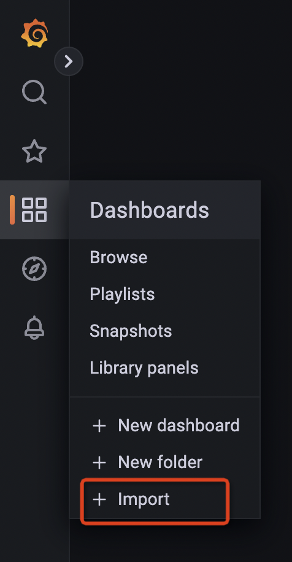
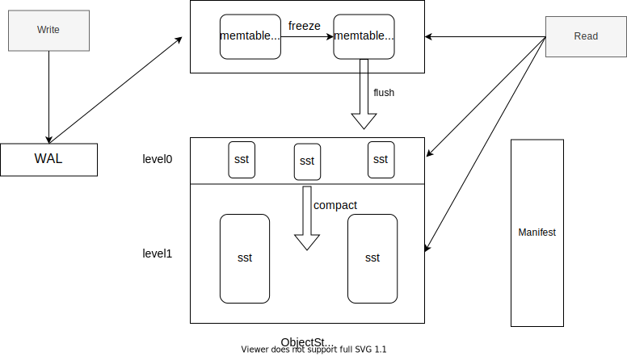

HoraeDB is a high-performance, distributed, cloud native time-series database.
Motivation
In the classic timeseries database, the Tag columns (InfluxDB calls them Tag and Prometheus calls them Label) are normally indexed by generating an inverted index. However, it is found that the cardinality of Tag varies in different scenarios. And in some scenarios the cardinality of Tag is very high, and it takes a very high cost to store and retrieve the inverted index. On the other hand, it is observed that scanning+pruning often used by the analytical databases can do a good job to handle such these scenarios.
The basic design idea of HoraeDB is to adopt a hybrid storage format and the corresponding query method for a better performance in processing both timeseries and analytic workloads.
How does HoraeDB work?
- See Quick Start to learn about how to get started
- For data model of HoraeDB, see Data Model
- For the supported SQL data types, operators, and commands, please navigate to SQL reference
- For the supported SDKs, please navigate to SDK
Quick Start
This page shows you how to get started with HoraeDB quickly. You'll start a standalone HoraeDB server, and then insert and read some sample data using SQL.
Start server
HoraeDB docker image is the easiest way to get started, if you haven't installed Docker, go there to install it first.
Note: please choose tag version >= v1.0.0, others are mainly for testing.
You can use command below to start a standalone server
docker run -d --name horaedb-server \
-p 8831:8831 \
-p 3307:3307 \
-p 5440:5440 \
ghcr.io/apache/horaedb-server:nightly-20231222-f57b3827
HoraeDB will listen three ports when start:
- 8831, gRPC port
- 3307, MySQL port
- 5440, HTTP port
The easiest to use is HTTP, so sections below will use it for demo. For production environments, gRPC/MySQL are recommended.
Customize docker configuration
Refer the command as below, you can customize the configuration of horaedb-server in docker, and mount the data directory /data to the hard disk of the docker host machine.
wget -c https://raw.githubusercontent.com/apache/incubator-horaedb/main/docs/minimal.toml -O horaedb.toml
sed -i 's/\/tmp\/horaedb/\/data/g' horaedb.toml
docker run -d --name horaedb-server \
-p 8831:8831 \
-p 3307:3307 \
-p 5440:5440 \
-v ./horaedb.toml:/etc/horaedb/horaedb.toml \
-v ./data:/data \
ghcr.io/apache/horaedb-server:nightly-20231222-f57b3827
Write and read data
Create table
curl --location --request POST 'http://127.0.0.1:5440/sql' \
-d '
CREATE TABLE `demo` (
`name` string TAG,
`value` double NOT NULL,
`t` timestamp NOT NULL,
timestamp KEY (t))
ENGINE=Analytic
with
(enable_ttl="false")
'
Write data
curl --location --request POST 'http://127.0.0.1:5440/sql' \
-d '
INSERT INTO demo (t, name, value)
VALUES (1651737067000, "horaedb", 100)
'
Read data
curl --location --request POST 'http://127.0.0.1:5440/sql' \
-d '
SELECT
*
FROM
`demo`
'
Show create table
curl --location --request POST 'http://127.0.0.1:5440/sql' \
-d '
SHOW CREATE TABLE `demo`
'
Drop table
curl --location --request POST 'http://127.0.0.1:5440/sql' \
-d '
DROP TABLE `demo`
'
Using the SDKs
See sdk
Next Step
Congrats, you have finished this tutorial. For more information about HoraeDB, see the following:
SQL Syntax
This chapter introduces the SQL statements of HoraeDB.
- Data Model
- Identifier
- Data Definition Statements
- Data Manipulation Statements
- Utility Statements
- Engine Options
- Scalar Functions
- Aggregate Functions
Data Model
This chapter introduces the data model of HoraeDB.
Data Types
HoraeDB implements table model, and the supported data types are similar to MySQL. The following table lists the mapping relationship between MySQL and HoraeDB.
Support Data Type(case-insensitive)
| SQL | HoraeDB |
|---|---|
| null | Null |
| timestamp | Timestamp |
| double | Double |
| float | Float |
| string | String |
| Varbinary | Varbinary |
| uint64 | UInt64 |
| uint32 | UInt32 |
| uint16 | UInt16 |
| uint8 | UInt8 |
| int64/bigint | Int64 |
| int32/int | Int32 |
| int16/smallint | Int16 |
| int8/tinyint | Int8 |
| boolean | Boolean |
| date | Date |
| time | Time |
Special Columns
Tables in HoraeDB have the following constraints:
- Primary key is required
- The primary key must contain a time column, and can only contain one time column
- The primary key must be non-null, so all columns in primary key must be non-null.
Timestamp Column
Tables in HoraeDB must have one timestamp column maps to timestamp in timeseries data, such as timestamp in OpenTSDB/Prometheus.
The timestamp column can be set with timestamp key keyword, like TIMESTAMP KEY(ts).
Tag Column
Tag is use to defined column as tag column, similar to tag in timeseries data, such as tag in OpenTSDB and label in Prometheus.
Primary Key
The primary key is used for data deduplication and sorting. The primary key is composed of some columns and one time column. The primary key can be set in the following some ways：
- use
primary keykeyword - use
tagto auto generate TSID, HoraeDB will use(TSID,timestamp)as primary key - only set Timestamp column, HoraeDB will use
(timestamp)as primary key
Notice: If the primary key and tag are specified at the same time, then the tag column is just an additional information identification and will not affect the logic.
CREATE TABLE with_primary_key(
ts TIMESTAMP NOT NULL,
c1 STRING NOT NULL,
c2 STRING NULL,
c4 STRING NULL,
c5 STRING NULL,
TIMESTAMP KEY(ts),
PRIMARY KEY(c1, ts)
) ENGINE=Analytic WITH (ttl='7d');
CREATE TABLE with_tag(
ts TIMESTAMP NOT NULL,
c1 STRING TAG NOT NULL,
c2 STRING TAG NULL,
c3 STRING TAG NULL,
c4 DOUBLE NULL,
c5 STRING NULL,
c6 STRING NULL,
TIMESTAMP KEY(ts)
) ENGINE=Analytic WITH (ttl='7d');
CREATE TABLE with_timestamp(
ts TIMESTAMP NOT NULL,
c1 STRING NOT NULL,
c2 STRING NULL,
c3 STRING NULL,
c4 DOUBLE NULL,
c5 STRING NULL,
c6 STRING NULL,
TIMESTAMP KEY(ts)
) ENGINE=Analytic WITH (ttl='7d');
TSID
If primary keyis not set, and tag columns is provided, TSID will auto generated from hash of tag columns.
In essence, this is also a mechanism for automatically generating id.
Identifier
Identifier in HoraeDB can be used as table name, column name etc. It cannot be preserved keywords or start with number and punctuation symbols. HoraeDB allows to quote identifiers with back quotes (`). In this case it can be any string like 00_table or select.
Data Definition Statements
This chapter introduces the data definition statements.
CREATE TABLE
Basic syntax
Basic syntax:
CREATE TABLE [IF NOT EXISTS]
table_name ( column_definitions )
[partition_options]
ENGINE = engine_type
[WITH ( table_options )];
Column definition syntax:
column_name column_type [[NOT] NULL] [TAG | TIMESTAMP KEY | PRIMARY KEY] [DICTIONARY] [COMMENT '']
Partition options syntax:
PARTITION BY KEY (column_list) [PARTITIONS num]
Table options syntax are key-value pairs. Value should be quoted with quotation marks ('). E.g.:
... WITH ( enable_ttl='false' )
IF NOT EXISTS
Add IF NOT EXISTS to tell HoraeDB to ignore errors if the table name already exists.
Define Column
A column's definition should at least contains the name and type parts. All supported types are listed here.
Column is default be nullable. i.e. NULL keyword is implied. Adding NOT NULL constrains to make it required.
-- this definition
a_nullable int
-- equals to
a_nullable int NULL
-- add NOT NULL to make it required
b_not_null NOT NULL
A column can be marked as special column with related keyword.
For string tag column, we recommend to define it as dictionary to reduce memory consumption:
`tag1` string TAG DICTIONARY
Engine
Specifies which engine this table belongs to. HoraeDB current support Analytic engine type. This attribute is immutable.
Partition Options
Note: This feature is only supported in distributed version.
CREATE TABLE ... PARTITION BY KEY
Example below creates a table with 8 partitions, and partitioned by name:
CREATE TABLE `demo` (
`name` string TAG COMMENT 'client username',
`value` double NOT NULL,
`t` timestamp NOT NULL,
timestamp KEY (t)
)
PARTITION BY KEY(name) PARTITIONS 8
ENGINE=Analytic
with (
enable_ttl='false'
)
ALTER TABLE
ALTER TABLE can change the schema or options of a table.
ALTER TABLE SCHEMA
HoraeDB current supports ADD COLUMN to alter table schema.
-- create a table and add a column to it
CREATE TABLE `t`(a int, t timestamp NOT NULL, TIMESTAMP KEY(t)) ENGINE = Analytic;
ALTER TABLE `t` ADD COLUMN (b string);
It now becomes:
-- DESCRIBE TABLE `t`;
name type is_primary is_nullable is_tag
t timestamp true false false
tsid uint64 true false false
a int false true false
b string false true false
ALTER TABLE OPTIONS
HoraeDB current supports MODIFY SETTING to alter table schema.
-- create a table and add a column to it
CREATE TABLE `t`(a int, t timestamp NOT NULL, TIMESTAMP KEY(t)) ENGINE = Analytic;
ALTER TABLE `t` MODIFY SETTING write_buffer_size='300M';
The SQL above tries to modify the write_buffer_size of the table, and the table's option becomes:
CREATE TABLE `t` (`tsid` uint64 NOT NULL, `t` timestamp NOT NULL, `a` int, PRIMARY KEY(tsid,t), TIMESTAMP KEY(t)) ENGINE=Analytic WITH(arena_block_size='2097152', compaction_strategy='default', compression='ZSTD', enable_ttl='true', num_rows_per_row_group='8192', segment_duration='', storage_format='AUTO', ttl='7d', update_mode='OVERWRITE', write_buffer_size='314572800')
Besides, the ttl can be altered from 7 days to 10 days by such SQL:
ALTER TABLE `t` MODIFY SETTING ttl='10d';
DROP TABLE
Basic syntax
Basic syntax:
DROP TABLE [IF EXISTS] table_name
Drop Table removes a specific table. This statement should be used with caution, because it removes both the table definition and table data, and this removal is not recoverable.
Data Manipulation Statements
This chapter introduces the data manipulation statements.
INSERT
Basic syntax
Basic syntax:
INSERT [INTO] tbl_name
[(col_name [, col_name] ...)]
{ {VALUES | VALUE} (value_list) [, (value_list)] ... }
INSERT inserts new rows into a HoraeDB table. Here is an example:
INSERT INTO demo(`time_stammp`, tag1) VALUES(1667374200022, 'horaedb')
SELECT
Basic syntax
Basic syntax (parts between [] are optional):
SELECT select_expr [, select_expr] ...
FROM table_name
[WHERE where_condition]
[GROUP BY {col_name | expr} ... ]
[ORDER BY {col_name | expr}
[ASC | DESC]
[LIMIT [offset,] row_count ]
Select syntax in HoraeDB is similar to mysql, here is an example:
SELECT * FROM `demo` WHERE time_stamp > '2022-10-11 00:00:00' AND time_stamp < '2022-10-12 00:00:00' LIMIT 10
Utility Statements
There are serval utilities SQL in HoraeDB that can help in table manipulation or query inspection.
SHOW CREATE TABLE
SHOW CREATE TABLE table_name;
SHOW CREATE TABLE returns a CREATE TABLE DDL that will create a same table with the given one. Including columns, table engine and options. The schema and options shows in CREATE TABLE will based on the current version of the table. An example:
-- create one table
CREATE TABLE `t` (a bigint, b int default 3, c string default 'x', d smallint null, t timestamp NOT NULL, TIMESTAMP KEY(t)) ENGINE = Analytic;
-- Result: affected_rows: 0
-- show how one table should be created.
SHOW CREATE TABLE `t`;
-- Result DDL:
CREATE TABLE `t` (
`t` timestamp NOT NULL,
`tsid` uint64 NOT NULL,
`a` bigint,
`b` int,
`c` string,
`d` smallint,
PRIMARY KEY(t,tsid),
TIMESTAMP KEY(t)
) ENGINE=Analytic WITH (
arena_block_size='2097152',
compaction_strategy='default',
compression='ZSTD',
enable_ttl='true',
num_rows_per_row_group='8192',
segment_duration='',
ttl='7d',
update_mode='OVERWRITE',
write_buffer_size='33554432'
)
DESCRIBE
DESCRIBE table_name;
DESCRIBE will show a detailed schema of one table. The attributes include column name and type, whether it is tag and primary key (todo: ref) and whether it's nullable. The auto created column tsid will also be included (todo: ref).
Example:
CREATE TABLE `t`(a int, b string, t timestamp NOT NULL, TIMESTAMP KEY(t)) ENGINE = Analytic;
DESCRIBE TABLE `t`;
The result is:
name type is_primary is_nullable is_tag
t timestamp true false false
tsid uint64 true false false
a int false true false
b string false true false
EXPLAIN
EXPLAIN query;
EXPLAIN shows how a query will be executed. Add it to the beginning of a query like
EXPLAIN SELECT max(value) AS c1, avg(value) AS c2 FROM `t` GROUP BY name;
will give
logical_plan
Projection: #MAX(07_optimizer_t.value) AS c1, #AVG(07_optimizer_t.value) AS c2
Aggregate: groupBy=[[#07_optimizer_t.name]], aggr=[[MAX(#07_optimizer_t.value), AVG(#07_optimizer_t.value)]]
TableScan: 07_optimizer_t projection=Some([name, value])
physical_plan
ProjectionExec: expr=[MAX(07_optimizer_t.value)@1 as c1, AVG(07_optimizer_t.value)@2 as c2]
AggregateExec: mode=FinalPartitioned, gby=[name@0 as name], aggr=[MAX(07_optimizer_t.value), AVG(07_optimizer_t.value)]
CoalesceBatchesExec: target_batch_size=4096
RepartitionExec: partitioning=Hash([Column { name: \"name\", index: 0 }], 6)
AggregateExec: mode=Partial, gby=[name@0 as name], aggr=[MAX(07_optimizer_t.value), AVG(07_optimizer_t.value)]
ScanTable: table=07_optimizer_t, parallelism=8, order=None
Options
Options below can be used when create table for analytic engine
-
enable_ttl,bool. When enable TTL on a table, rows older thanttlwill be deleted and can't be querid, defaulttrue -
ttl,duration, lifetime of a row, only used whenenable_ttlistrue. default7d. -
storage_format,string. The underlying column's format. Availiable values:columnar, defaulthybrid, Note: This feature is still in development, and it may change in the future.
The meaning of those two values are in Storage format section.
Storage Format
There are mainly two formats supported in analytic engine. One is columnar, which is the traditional columnar format, with one table column in one physical column:
| Timestamp | Device ID | Status Code | Tag 1 | Tag 2 |
| --------- |---------- | ----------- | ----- | ----- |
| 12:01 | A | 0 | v1 | v1 |
| 12:01 | B | 0 | v2 | v2 |
| 12:02 | A | 0 | v1 | v1 |
| 12:02 | B | 1 | v2 | v2 |
| 12:03 | A | 0 | v1 | v1 |
| 12:03 | B | 0 | v2 | v2 |
| ..... | | | | |
The other one is hybrid, an experimental format used to simulate row-oriented storage in columnar storage to accelerate classic time-series query.
In classic time-series user cases like IoT or DevOps, queries will typically first group their result by series id(or device id), then by timestamp. In order to achieve good performance in those scenarios, the data physical layout should match this style, so the hybrid format is proposed like this:
| Device ID | Timestamp | Status Code | Tag 1 | Tag 2 | minTime | maxTime |
|-----------|---------------------|-------------|-------|-------|---------|---------|
| A | [12:01,12:02,12:03] | [0,0,0] | v1 | v1 | 12:01 | 12:03 |
| B | [12:01,12:02,12:03] | [0,1,0] | v2 | v2 | 12:01 | 12:03 |
| ... | | | | | | |
- Within one file, rows belonging to the same primary key(eg: series/device id) are collapsed into one row
- The columns besides primary key are divided into two categories:
collapsible, those columns will be collapsed into a list. Used to encodefieldsin time-series table- Note: only fixed-length type is supported now
non-collapsible, those columns should only contain one distinct value. Used to encodetagsin time-series table- Note: only string type is supported now
- Two more columns are added,
minTimeandmaxTime. Those are used to cut unnecessary rows out in query.- Note: Not implemented yet.
Example
CREATE TABLE `device` (
`ts` timestamp NOT NULL,
`tag1` string tag,
`tag2` string tag,
`value1` double,
`value2` int,
timestamp KEY (ts)) ENGINE=Analytic
with (
enable_ttl = 'false',
storage_format = 'hybrid'
);
This will create a table with hybrid format, users can inspect data format with parquet-tools. The table above should have following parquet schema:
message arrow_schema {
optional group ts (LIST) {
repeated group list {
optional int64 item (TIMESTAMP(MILLIS,false));
}
}
required int64 tsid (INTEGER(64,false));
optional binary tag1 (STRING);
optional binary tag2 (STRING);
optional group value1 (LIST) {
repeated group list {
optional double item;
}
}
optional group value2 (LIST) {
repeated group list {
optional int32 item;
}
}
}
Scalar Functions
HoraeDB SQL is implemented with DataFusion, Here is the list of scalar functions. See more detail, Refer to Datafusion
Math Functions
| Function | Description |
|---|---|
| abs(x) | absolute value |
| acos(x) | inverse cosine |
| asin(x) | inverse sine |
| atan(x) | inverse tangent |
| atan2(y, x) | inverse tangent of y / x |
| ceil(x) | nearest integer greater than or equal to argument |
| cos(x) | cosine |
| exp(x) | exponential |
| floor(x) | nearest integer less than or equal to argument |
| ln(x) | natural logarithm |
| log10(x) | base 10 logarithm |
| log2(x) | base 2 logarithm |
| power(base, exponent) | base raised to the power of exponent |
| round(x) | round to nearest integer |
| signum(x) | sign of the argument (-1, 0, +1) |
| sin(x) | sine |
| sqrt(x) | square root |
| tan(x) | tangent |
| trunc(x) | truncate toward zero |
Conditional Functions
| Function | Description |
|---|---|
| coalesce | Returns the first of its arguments that is not null. Null is returned only if all arguments are null. It is often used to substitute a default value for null values when data is retrieved for display. |
| nullif | Returns a null value if value1 equals value2; otherwise it returns value1. This can be used to perform the inverse operation of the coalesce expression. |
String Functions
| Function | Description |
|---|---|
| ascii | Returns the numeric code of the first character of the argument. In UTF8 encoding, returns the Unicode code point of the character. In other multibyte encodings, the argument must be an ASCII character. |
| bit_length | Returns the number of bits in a character string expression. |
| btrim | Removes the longest string containing any of the specified characters from the start and end of string. |
| char_length | Equivalent to length. |
| character_length | Equivalent to length. |
| concat | Concatenates two or more strings into one string. |
| concat_ws | Combines two values with a given separator. |
| chr | Returns the character based on the number code. |
| initcap | Capitalizes the first letter of each word in a string. |
| left | Returns the specified leftmost characters of a string. |
| length | Returns the number of characters in a string. |
| lower | Converts all characters in a string to their lower case equivalent. |
| lpad | Left-pads a string to a given length with a specific set of characters. |
| ltrim | Removes the longest string containing any of the characters in characters from the start of string. |
| md5 | Calculates the MD5 hash of a given string. |
| octet_length | Equivalent to length. |
| repeat | Returns a string consisting of the input string repeated a specified number of times. |
| replace | Replaces all occurrences in a string of a substring with a new substring. |
| reverse | Reverses a string. |
| right | Returns the specified rightmost characters of a string. |
| rpad | Right-pads a string to a given length with a specific set of characters. |
| rtrim | Removes the longest string containing any of the characters in characters from the end of string. |
| digest | Calculates the hash of a given string. |
| split_part | Splits a string on a specified delimiter and returns the specified field from the resulting array. |
| starts_with | Checks whether a string starts with a particular substring. |
| strpos | Searches a string for a specific substring and returns its position. |
| substr | Extracts a substring of a string. |
| translate | Translates one set of characters into another. |
| trim | Removes the longest string containing any of the characters in characters from either the start or end of string. |
| upper | Converts all characters in a string to their upper case equivalent. |
Regular Expression Functions
| Function | Description |
|---|---|
| regexp_match | Determines whether a string matches a regular expression pattern. |
| regexp_replace | Replaces all occurrences in a string of a substring that matches a regular expression pattern with a new substring. |
Temporal Functions
| Function | Description |
|---|---|
| to_timestamp | Converts a string to type Timestamp(Nanoseconds, None). |
| to_timestamp_millis | Converts a string to type Timestamp(Milliseconds, None). |
| to_timestamp_micros | Converts a string to type Timestamp(Microseconds, None). |
| to_timestamp_seconds | Converts a string to type Timestamp(Seconds, None). |
| extract | Retrieves subfields such as year or hour from date/time values. |
| date_part | Retrieves subfield from date/time values. |
| date_trunc | Truncates date/time values to specified precision. |
| date_bin | Bin date/time values to specified precision. |
| from_unixtime | Converts Unix epoch to type Timestamp(Nanoseconds, None). |
| now | Returns current time as Timestamp(Nanoseconds, UTC). |
Other Functions
| Function | Description |
|---|---|
| array | Create an array. |
| arrow_typeof | Returns underlying type. |
| in_list | Check if value in list. |
| random | Generate random value. |
| sha224 | sha224 |
| sha256 | sha256 |
| sha384 | sha384 |
| sha512 | sha512 |
| to_hex | Convert to hex. |
Aggregate Functions
HoraeDB SQL is implemented with DataFusion, Here is the list of aggregate functions. See more detail, Refer to Datafusion
General
| Function | Description |
|---|---|
| min | Returns the minimum value in a numerical column |
| max | Returns the maximum value in a numerical column |
| count | Returns the number of rows |
| avg | Returns the average of a numerical column |
| sum | Sums a numerical column |
| array_agg | Puts values into an array |
Statistical
| Function | Description |
|---|---|
| var / var_samp | Returns the variance of a given column |
| var_pop | Returns the population variance of a given column |
| stddev / stddev_samp | Returns the standard deviation of a given column |
| stddev_pop | Returns the population standard deviation of a given column |
| covar / covar_samp | Returns the covariance of a given column |
| covar_pop | Returns the population covariance of a given column |
| corr | Returns the correlation coefficient of a given column |
Approximate
| Function | Description |
|---|---|
| approx_distinct | Returns the approximate number (HyperLogLog) of distinct input values |
| approx_median | Returns the approximate median of input values. It is an alias of approx_percentile_cont(x, 0.5). |
| approx_percentile_cont | Returns the approximate percentile (TDigest) of input values, where p is a float64 between 0 and 1 (inclusive). It supports raw data as input and build Tdigest sketches during query time, and is approximately equal to approx_percentile_cont_with_weight(x, 1, p). |
| approx_percentile_cont_with_weight | Returns the approximate percentile (TDigest) of input values with weight, where w is weight column expression and p is a float64 between 0 and 1 (inclusive). It supports raw data as input or pre-aggregated TDigest sketches, then builds or merges Tdigest sketches during query time. TDigest sketches are a list of centroid (x, w), where x stands for mean and w stands for weight. |
Cluster Deployment
In the Quick Start section, we have introduced the deployment of single HoraeDB instance.
Besides, as a distributed timeseries database, multiple HoraeDB instances can be deployed as a cluster to serve with high availability and scalability.
Currently, work about the integration with kubernetes is still in process, so HoraeDB cluster can only be deployed manually. And there are two modes of cluster deployment:
As an open source cloud-native, HoraeDB can be deployed in the Intel/ARM-based architecture server, and major virtualization environments.
| OS | status |
|---|---|
| Ubuntu LTS 16.06 or later | ✅ |
| CentOS 7.3 or later | ✅ |
| Red Hat Enterprise Linux 7.3 or later 7.x releases | ✅ |
| macOS 11 or later | ✅ |
| Windows | ❌ |
- For production workloads, Linux is the preferred platform.
- macOS is mainly used for development
Note: This feature is for testing use only, not recommended for production use, related features may change in the future.
NoMeta
This guide shows how to deploy a HoraeDB cluster without HoraeMeta, but with static, rule-based routing.
The crucial point here is that HoraeDB server provides configurable routing function on table name so what we need is just a valid config containing routing rules which will be shipped to every HoraeDB instance in the cluster.
Target
First, let's assume that our target is to deploy a cluster consisting of two HoraeDB instances on the same machine. And a large cluster of more HoraeDB instances can be deployed according to the two-instance example.
Prepare Config
Basic
Suppose the basic config of HoraeDB is:
[server]
bind_addr = "0.0.0.0"
http_port = 5440
grpc_port = 8831
[logger]
level = "info"
[tracing]
dir = "/tmp/horaedb"
[analytic.storage.object_store]
type = "Local"
data_dir = "/tmp/horaedb"
[analytic.wal]
type = "RocksDB"
data_dir = "/tmp/horaedb"
In order to deploy two HoraeDB instances on the same machine, the config should choose different ports to serve and data directories to store data.
Say the HoraeDB_0's config is:
[server]
bind_addr = "0.0.0.0"
http_port = 5440
grpc_port = 8831
[logger]
level = "info"
[tracing]
dir = "/tmp/horaedb_0"
[analytic.storage.object_store]
type = "Local"
data_dir = "/tmp/horaedb_0"
[analytic.wal]
type = "RocksDB"
data_dir = "/tmp/horaedb_0"
Then the HoraeDB_1's config is:
[server]
bind_addr = "0.0.0.0"
http_port = 15440
grpc_port = 18831
[logger]
level = "info"
[tracing]
dir = "/tmp/horaedb_1"
[analytic.storage.object_store]
type = "Local"
data_dir = "/tmp/horaedb_1"
[analytic.wal]
type = "RocksDB"
data_dir = "/tmp/horaedb_1"
Schema&Shard Declaration
Then we should define the common part -- schema&shard declaration and routing rules.
Here is the config for schema&shard declaration:
[cluster_deployment]
mode = "NoMeta"
[[cluster_deployment.topology.schema_shards]]
schema = 'public_0'
[[cluster_deployment.topology.schema_shards.shard_views]]
shard_id = 0
[cluster_deployment.topology.schema_shards.shard_views.endpoint]
addr = '127.0.0.1'
port = 8831
[[cluster_deployment.topology.schema_shards.shard_views]]
shard_id = 1
[cluster_deployment.topology.schema_shards.shard_views.endpoint]
addr = '127.0.0.1'
port = 8831
[[cluster_deployment.topology.schema_shards]]
schema = 'public_1'
[[cluster_deployment.topology.schema_shards.shard_views]]
shard_id = 0
[cluster_deployment.topology.schema_shards.shard_views.endpoint]
addr = '127.0.0.1'
port = 8831
[[cluster_deployment.topology.schema_shards.shard_views]]
shard_id = 1
[cluster_deployment.topology.schema_shards.shard_views.endpoint]
addr = '127.0.0.1'
port = 18831
In the config above, two schemas are declared:
public_0has two shards served byHoraeDB_0.public_1has two shards served by bothHoraeDB_0andHoraeDB_1.
Routing Rules
Provided with schema&shard declaration, routing rules can be defined and here is an example of prefix rule:
[[cluster_deployment.route_rules.prefix_rules]]
schema = 'public_0'
prefix = 'prod_'
shard = 0
This rule means that all the table with prod_ prefix belonging to public_0 should be routed to shard_0 of public_0, that is to say, HoraeDB_0. As for the other tables whose names are not prefixed by prod_ will be routed by hash to both shard_0 and shard_1 of public_0.
Besides prefix rule, we can also define a hash rule:
[[cluster_deployment.route_rules.hash_rules]]
schema = 'public_1'
shards = [0, 1]
This rule tells HoraeDB to route public_1's tables to both shard_0 and shard_1 of public_1, that is to say, HoraeDB0 and HoraeDB_1. And actually this is default routing behavior if no such rule provided for schema public_1.
For now, we can provide the full example config for HoraeDB_0 and HoraeDB_1:
[server]
bind_addr = "0.0.0.0"
http_port = 5440
grpc_port = 8831
mysql_port = 3307
[logger]
level = "info"
[tracing]
dir = "/tmp/horaedb_0"
[analytic.storage.object_store]
type = "Local"
data_dir = "/tmp/horaedb_0"
[analytic.wal]
type = "RocksDB"
data_dir = "/tmp/horaedb_0"
[cluster_deployment]
mode = "NoMeta"
[[cluster_deployment.topology.schema_shards]]
schema = 'public_0'
[[cluster_deployment.topology.schema_shards.shard_views]]
shard_id = 0
[cluster_deployment.topology.schema_shards.shard_views.endpoint]
addr = '127.0.0.1'
port = 8831
[[cluster_deployment.topology.schema_shards.shard_views]]
shard_id = 1
[cluster_deployment.topology.schema_shards.shard_views.endpoint]
addr = '127.0.0.1'
port = 8831
[[cluster_deployment.topology.schema_shards]]
schema = 'public_1'
[[cluster_deployment.topology.schema_shards.shard_views]]
shard_id = 0
[cluster_deployment.topology.schema_shards.shard_views.endpoint]
addr = '127.0.0.1'
port = 8831
[[cluster_deployment.topology.schema_shards.shard_views]]
shard_id = 1
[cluster_deployment.topology.schema_shards.shard_views.endpoint]
addr = '127.0.0.1'
port = 18831
[server]
bind_addr = "0.0.0.0"
http_port = 15440
grpc_port = 18831
mysql_port = 13307
[logger]
level = "info"
[tracing]
dir = "/tmp/horaedb_1"
[analytic.storage.object_store]
type = "Local"
data_dir = "/tmp/horaedb_1"
[analytic.wal]
type = "RocksDB"
data_dir = "/tmp/horaedb_1"
[cluster_deployment]
mode = "NoMeta"
[[cluster_deployment.topology.schema_shards]]
schema = 'public_0'
[[cluster_deployment.topology.schema_shards.shard_views]]
shard_id = 0
[cluster_deployment.topology.schema_shards.shard_views.endpoint]
addr = '127.0.0.1'
port = 8831
[[cluster_deployment.topology.schema_shards.shard_views]]
shard_id = 1
[cluster_deployment.topology.schema_shards.shard_views.endpoint]
addr = '127.0.0.1'
port = 8831
[[cluster_deployment.topology.schema_shards]]
schema = 'public_1'
[[cluster_deployment.topology.schema_shards.shard_views]]
shard_id = 0
[cluster_deployment.topology.schema_shards.shard_views.endpoint]
addr = '127.0.0.1'
port = 8831
[[cluster_deployment.topology.schema_shards.shard_views]]
shard_id = 1
[cluster_deployment.topology.schema_shards.shard_views.endpoint]
addr = '127.0.0.1'
port = 18831
Let's name the two different config files as config_0.toml and config_1.toml but you should know in the real environment the different HoraeDB instances can be deployed across different machines, that is to say, there is no need to choose different ports and data directories for different HoraeDB instances so that all the HoraeDB instances can share one exactly same config file.
Start HoraeDBs
After the configs are prepared, what we should to do is to start HoraeDB container with the specific config.
Just run the commands below:
sudo docker run -d -t --name horaedb_0 -p 5440:5440 -p 8831:8831 -v $(pwd)/config_0.toml:/etc/horaedb/horaedb.toml horaedb/horaedb-server
sudo docker run -d -t --name horaedb_1 -p 15440:15440 -p 18831:18831 -v $(pwd)/config_1.toml:/etc/horaedb/horaedb.toml horaedb/horaedb-server
After the two containers are created and starting running, read and write requests can be served by the two-instances HoraeDB cluster.
WithMeta
This guide shows how to deploy a HoraeDB cluster with HoraeMeta. And with the HoraeMeta, the whole HoraeDB cluster will feature: high availability, load balancing and horizontal scalability if the underlying storage used by HoraeDB is separated service.
Deploy HoraeMeta
Introduce
HoraeMeta is one of the core services of HoraeDB distributed mode, it is used to manage and schedule the HoraeDB cluster. By the way, the high availability of HoraeMeta is ensured by embedding ETCD. Also, the ETCD service is provided for HoraeDB servers to manage the distributed shard locks.
Build
- Golang version >= 1.19.
- run
make buildin root path of HoraeMeta.
Deploy
Config
At present, HoraeMeta supports specifying service startup configuration in two ways: configuration file and environment variable. We provide an example of configuration file startup. For details, please refer to config. The configuration priority of environment variables is higher than that of configuration files. When they exist at the same time, the environment variables shall prevail.
Dynamic or Static
Even with the HoraeMeta, the HoraeDB cluster can be deployed with a static or a dynamic topology. With a static topology, the table distribution is static after the cluster is initialized while with the dynamic topology, the tables can migrate between different HoraeDB nodes to achieve load balance or failover. However, the dynamic topology can be enabled only if the storage used by the HoraeDB node is remote, otherwise the data may be corrupted when tables are transferred to a different HoraeDB node when the data of HoraeDB is persisted locally.
Currently, the dynamic scheduling over the cluster topology is disabled by default in HoraeMeta, and in this guide, we won't enable it because local storage is adopted here. If you want to enable the dynamic scheduling, the TOPOLOGY_TYPE can be set as dynamic (static by default), and after that, load balancing and failover will work. However, don't enable it if what the underlying storage is local disk.
With the static topology, the params DEFAULT_CLUSTER_NODE_COUNT, which denotes the number of the HoraeDB nodes in the deployed cluster and should be set to the real number of machines for HoraeDB server, matters a lot because after cluster initialization the HoraeDB nodes can't be changed any more.
Start HoraeMeta Instances
HoraeMeta is based on etcd to achieve high availability. In product environment, we usually deploy multiple nodes, but in local environment and testing, we can directly deploy a single node to simplify the entire deployment process.
- Standalone
docker run -d --name horaemeta-server \
-p 2379:2379 \
ghcr.io/apache/horaemeta-server:nightly-20231225-ab067bf0
- Cluster
wget https://raw.githubusercontent.com/apache/incubator-horaedb-docs/main/docs/src/resources/config-horaemeta-cluster0.toml
docker run -d --network=host --name horaemeta-server0 \
-v $(pwd)/config-horaemeta-cluster0.toml:/etc/horaemeta/horaemeta.toml \
ghcr.io/apache/horaemeta-server:nightly-20231225-ab067bf0
wget https://raw.githubusercontent.com/apache/incubator-horaedb-docs/main/docs/src/resources/config-horaemeta-cluster1.toml
docker run -d --network=host --name horaemeta-server1 \
-v $(pwd)/config-horaemeta-cluster1.toml:/etc/horaemeta/horaemeta.toml \
ghcr.io/apache/horaemeta-server:nightly-20231225-ab067bf0
wget https://raw.githubusercontent.com/apache/incubator-horaedb-docs/main/docs/src/resources/config-horaemeta-cluster2.toml
docker run -d --network=host --name horaemeta-server2 \
-v $(pwd)/config-horaemeta-cluster2.toml:/etc/horaemeta/horaemeta.toml \
ghcr.io/apache/horaemeta-server:nightly-20231225-ab067bf0
And if the storage used by the HoraeDB is remote and you want to enable the dynamic schedule features of the HoraeDB cluster, the -e TOPOLOGY_TYPE=dynamic can be added to the docker run command.
Deploy HoraeDB
In the NoMeta mode, HoraeDB only requires the local disk as the underlying storage because the topology of the HoraeDB cluster is static. However, with HoraeMeta, the cluster topology can be dynamic, that is to say, HoraeDB can be configured to use a non-local storage service for the features of a distributed system: HA, load balancing, scalability and so on. And HoraeDB can be still configured to use a local storage with HoraeMeta, which certainly leads to a static cluster topology.
The relevant storage configurations include two parts:
- Object Storage
- WAL Storage
Note: If you are deploying HoraeDB over multiple nodes in a production environment, please set the environment variable for the server address as follows:
export HORAEDB_SERVER_ADDR="{server_address}:8831"
This address is used for communication between HoraeMeta and HoraeDB, please ensure it is valid.
Object Storage
Local Storage
Similarly, we can configure HoraeDB to use a local disk as the underlying storage:
[analytic.storage.object_store]
type = "Local"
data_dir = "/home/admin/data/horaedb"
OSS
Aliyun OSS can be also used as the underlying storage for HoraeDB, with which the data is replicated for disaster recovery. Here is a example config, and you have to replace the templates with the real OSS parameters:
[analytic.storage.object_store]
type = "Aliyun"
key_id = "{key_id}"
key_secret = "{key_secret}"
endpoint = "{endpoint}"
bucket = "{bucket}"
prefix = "{data_dir}"
S3
Amazon S3 can be also used as the underlying storage for HoraeDB. Here is a example config, and you have to replace the templates with the real S3 parameters:
[analytic.storage.object_store]
type = "S3"
region = "{region}"
key_id = "{key_id}"
key_secret = "{key_secret}"
endpoint = "{endpoint}"
bucket = "{bucket}"
prefix = "{prefix}"
WAL Storage
RocksDB
The WAL based on RocksDB is also a kind of local storage for HoraeDB, which is easy for a quick start:
[analytic.wal]
type = "RocksDB"
data_dir = "/home/admin/data/horaedb"
OceanBase
If you have deployed a OceanBase cluster, HoraeDB can use it as the WAL storage for data disaster recovery. Here is a example config for such WAL, and you have to replace the templates with real OceanBase parameters:
[analytic.wal]
type = "Obkv"
[analytic.wal.data_namespace]
ttl = "365d"
[analytic.wal.obkv]
full_user_name = "{full_user_name}"
param_url = "{param_url}"
password = "{password}"
[analytic.wal.obkv.client]
sys_user_name = "{sys_user_name}"
sys_password = "{sys_password}"
Kafka
If you have deployed a Kafka cluster, HoraeDB can also use it as the WAL storage. Here is example config for it, and you have to replace the templates with real parameters of the Kafka cluster:
[analytic.wal]
type = "Kafka"
[analytic.wal.kafka.client]
boost_broker = "{boost_broker}"
Meta Client Config
Besides the storage configurations, HoraeDB must be configured to start in WithMeta mode and connect to the deployed HoraeMeta:
[cluster_deployment]
mode = "WithMeta"
[cluster_deployment.meta_client]
cluster_name = 'defaultCluster'
meta_addr = 'http://{HoraeMetaAddr}:2379'
lease = "10s"
timeout = "5s"
[cluster_deployment.etcd_client]
server_addrs = ['http://{HoraeMetaAddr}:2379']
Complete Config of HoraeDB
With all the parts of the configurations mentioned above, a runnable complete config for HoraeDB can be made. In order to make the HoraeDB cluster runnable, we can decide to adopt RocksDB-based WAL and local-disk-based Object Storage:
[server]
bind_addr = "0.0.0.0"
http_port = 5440
grpc_port = 8831
[logger]
level = "info"
[runtime]
read_thread_num = 20
write_thread_num = 16
background_thread_num = 12
[cluster_deployment]
mode = "WithMeta"
[cluster_deployment.meta_client]
cluster_name = 'defaultCluster'
meta_addr = 'http://127.0.0.1:2379'
lease = "10s"
timeout = "5s"
[cluster_deployment.etcd_client]
server_addrs = ['127.0.0.1:2379']
[analytic]
write_group_worker_num = 16
replay_batch_size = 100
max_replay_tables_per_batch = 128
write_group_command_channel_cap = 1024
sst_background_read_parallelism = 8
[analytic.manifest]
scan_batch_size = 100
snapshot_every_n_updates = 10000
scan_timeout = "5s"
store_timeout = "5s"
[analytic.wal]
type = "RocksDB"
data_dir = "/home/admin/data/horaedb"
[analytic.storage]
mem_cache_capacity = "20GB"
# 1<<8=256
mem_cache_partition_bits = 8
[analytic.storage.object_store]
type = "Local"
data_dir = "/home/admin/data/horaedb/"
[analytic.table_opts]
arena_block_size = 2097152
write_buffer_size = 33554432
[analytic.compaction]
schedule_channel_len = 16
schedule_interval = "30m"
max_ongoing_tasks = 8
memory_limit = "4G"
Let's name this config file as config.toml. And the example configs, in which the templates must be replaced with real parameters before use, for remote storages are also provided:
Run HoraeDB cluster with HoraeMeta
Firstly, let's start the HoraeMeta:
docker run -d --name horaemeta-server \
-p 2379:2379 \
ghcr.io/apache/horaemeta-server:nightly-20231225-ab067bf0
With the started HoraeMeta cluster, let's start the HoraeDB instance: TODO: complete it later
SDK
Java
Introduction
HoraeDB Client is a high-performance Java client for HoraeDB.
Requirements
- Java 8 or later is required for compilation
Dependency
<dependency>
<groupId>io.ceresdb</groupId>
<artifactId>ceresdb-all</artifactId>
<version>${CERESDB.VERSION}</version>
</dependency>
You can get latest version here.
Init HoraeDB Client
final CeresDBOptions opts = CeresDBOptions.newBuilder("127.0.0.1", 8831, DIRECT) // CeresDB default grpc port 8831，use DIRECT RouteMode
.database("public") // use database for client, can be overridden by the RequestContext in request
// maximum retry times when write fails
// (only some error codes will be retried, such as the routing table failure)
.writeMaxRetries(1)
// maximum retry times when read fails
// (only some error codes will be retried, such as the routing table failure)
.readMaxRetries(1).build();
final CeresDBClient client = new CeresDBClient();
if (!client.init(opts)) {
throw new IllegalStateException("Fail to start CeresDBClient");
}
The initialization requires at least three parameters:
Endpoint: 127.0.0.1Port: 8831RouteMode: DIRECT/PROXY
Here is the explanation of RouteMode. There are two kinds of RouteMode,The Direct mode should be adopted to avoid forwarding overhead if all the servers are accessible to the client.
However, the Proxy mode is the only choice if the access to the servers from the client must go through a gateway.
For more configuration options, see configuration
Notice: HoraeDB currently only supports the default database public now, multiple databases will be supported in the future;
Create Table Example
For ease of use, when using gRPC's write interface for writing, if a table does not exist, HoraeDB will automatically create a table based on the first write.
Of course, you can also use create table statement to manage the table more finely (such as adding indexes).
The following table creation statement（using the SQL API included in SDK ）shows all field types supported by HoraeDB：
// Create table manually, creating table schema ahead of data ingestion is not required
String createTableSql = "CREATE TABLE IF NOT EXISTS machine_table(" +
"ts TIMESTAMP NOT NULL," +
"city STRING TAG NOT NULL," +
"ip STRING TAG NOT NULL," +
"cpu DOUBLE NULL," +
"mem DOUBLE NULL," +
"TIMESTAMP KEY(ts)" + // timestamp column must be specified
") ENGINE=Analytic";
Result<SqlQueryOk, Err> createResult = client.sqlQuery(new SqlQueryRequest(createTableSql)).get();
if (!createResult.isOk()) {
throw new IllegalStateException("Fail to create table");
}
Drop Table Example
Here is an example of dropping table：
String dropTableSql = "DROP TABLE machine_table";
Result<SqlQueryOk, Err> dropResult = client.sqlQuery(new SqlQueryRequest(dropTableSql)).get();
if (!dropResult.isOk()) {
throw new IllegalStateException("Fail to drop table");
}
Write Data Example
Firstly, you can use PointBuilder to build HoraeDB points:
List<Point> pointList = new LinkedList<>();
for (int i = 0; i < 100; i++) {
// build one point
final Point point = Point.newPointBuilder("machine_table")
.setTimestamp(t0)
.addTag("city", "Singapore")
.addTag("ip", "10.0.0.1")
.addField("cpu", Value.withDouble(0.23))
.addField("mem", Value.withDouble(0.55))
.build();
points.add(point);
}
Then, you can use write interface to write data:
final CompletableFuture<Result<WriteOk, Err>> wf = client.write(new WriteRequest(pointList));
// here the `future.get` is just for demonstration, a better async programming practice would be using the CompletableFuture API
final Result<WriteOk, Err> writeResult = wf.get();
Assert.assertTrue(writeResult.isOk());
// `Result` class referenced the Rust language practice, provides rich functions (such as mapXXX, andThen) transforming the result value to improve programming efficiency. You can refer to the API docs for detail usage.
Assert.assertEquals(3, writeResult.getOk().getSuccess());
Assert.assertEquals(3, writeResult.mapOr(0, WriteOk::getSuccess).intValue());
Assert.assertEquals(0, writeResult.mapOr(-1, WriteOk::getFailed).intValue());
See write
Query Data Example
final SqlQueryRequest queryRequest = SqlQueryRequest.newBuilder()
.forTables("machine_table") // table name is optional. If not provided, SQL parser will parse the `ssql` to get the table name and do the routing automaticly
.sql("select * from machine_table where ts = %d", t0) //
.build();
final CompletableFuture<Result<SqlQueryOk, Err>> qf = client.sqlQuery(queryRequest);
// here the `future.get` is just for demonstration, a better async programming practice would be using the CompletableFuture API
final Result<SqlQueryOk, Err> queryResult = qf.get();
Assert.assertTrue(queryResult.isOk());
final SqlQueryOk queryOk = queryResult.getOk();
Assert.assertEquals(1, queryOk.getRowCount());
// get rows as list
final List<Row> rows = queryOk.getRowList();
Assert.assertEquals(t0, rows.get(0).getColumn("ts").getValue().getTimestamp());
Assert.assertEquals("Singapore", rows.get(0).getColumn("city").getValue().getString());
Assert.assertEquals("10.0.0.1", rows.get(0).getColumn("ip").getValue().getString());
Assert.assertEquals(0.23, rows.get(0).getColumn("cpu").getValue().getDouble(), 0.0000001);
Assert.assertEquals(0.55, rows.get(0).getColumn("mem").getValue().getDouble(), 0.0000001);
// get rows as stream
final Stream<Row> rowStream = queryOk.stream();
rowStream.forEach(row -> System.out.println(row.toString()));
See read
Stream Write/Read Example
HoraeDB support streaming writing and reading，suitable for large-scale data reading and writing。
long start = System.currentTimeMillis();
long t = start;
final StreamWriteBuf<Point, WriteOk> writeBuf = client.streamWrite("machine_table");
for (int i = 0; i < 1000; i++) {
final Point streamData = Point.newPointBuilder("machine_table")
.setTimestamp(t)
.addTag("city", "Beijing")
.addTag("ip", "10.0.0.3")
.addField("cpu", Value.withDouble(0.42))
.addField("mem", Value.withDouble(0.67))
.build();
writeBuf.writeAndFlush(Collections.singletonList(streamData));
t = t+1;
}
final CompletableFuture<WriteOk> writeOk = writeBuf.completed();
Assert.assertEquals(1000, writeOk.join().getSuccess());
final SqlQueryRequest streamQuerySql = SqlQueryRequest.newBuilder()
.sql("select * from %s where city = '%s' and ts >= %d and ts < %d", "machine_table", "Beijing", start, t).build();
final Result<SqlQueryOk, Err> streamQueryResult = client.sqlQuery(streamQuerySql).get();
Assert.assertTrue(streamQueryResult.isOk());
Assert.assertEquals(1000, streamQueryResult.getOk().getRowCount());
See streaming
Go
Installation
go get github.com/apache/incubator-horaedb-client-go
You can get latest version here.
How To Use
Init HoraeDB Client
client, err := horaedb.NewClient(endpoint, horaedb.Direct,
horaedb.WithDefaultDatabase("public"),
)
| option name | description |
|---|---|
| defaultDatabase | using database, database can be overwritten by ReqContext in single Write or SQLRequest |
| RPCMaxRecvMsgSize | configration for grpc MaxCallRecvMsgSize, default 1024 _ 1024 _ 1024 |
| RouteMaxCacheSize | If the maximum number of router cache size, router client whill evict oldest if exceeded, default is 10000 |
Notice:
- HoraeDB currently only supports the default database
publicnow, multiple databases will be supported in the future
Manage Table
HoraeDB uses SQL to manage tables, such as creating tables, deleting tables, or adding columns, etc., which is not much different from when you use SQL to manage other databases.
For ease of use, when using gRPC's write interface for writing, if a table does not exist, HoraeDB will automatically create a table based on the first write.
Of course, you can also use create table statement to manage the table more finely (such as adding indexes).
Example for creating table
createTableSQL := `
CREATE TABLE IF NOT EXISTS demo (
name string TAG,
value double,
t timestamp NOT NULL,
TIMESTAMP KEY(t)
) ENGINE=Analytic with (enable_ttl=false)`
req := horaedb.SQLQueryRequest{
Tables: []string{"demo"},
SQL: createTableSQL,
}
resp, err := client.SQLQuery(context.Background(), req)
Example for droping table
dropTableSQL := `DROP TABLE demo`
req := horaedb.SQLQueryRequest{
Tables: []string{"demo"},
SQL: dropTableSQL,
}
resp, err := client.SQLQuery(context.Background(), req)
How To Build Write Data
points := make([]horaedb.Point, 0, 2)
for i := 0; i < 2; i++ {
point, err := horaedb.NewPointBuilder("demo").
SetTimestamp(now).
AddTag("name", horaedb.NewStringValue("test_tag1")).
AddField("value", horaedb.NewDoubleValue(0.4242)).
Build()
if err != nil {
panic(err)
}
points = append(points, point)
}
Write Example
req := horaedb.WriteRequest{
Points: points,
}
resp, err := client.Write(context.Background(), req)
Query Example
querySQL := `SELECT * FROM demo`
req := horaedb.SQLQueryRequest{
Tables: []string{"demo"},
SQL: querySQL,
}
resp, err := client.SQLQuery(context.Background(), req)
if err != nil {
panic(err)
}
fmt.Printf("query table success, rows:%+v\n", resp.Rows)
Example
You can find the complete example here.
Python
Introduction
horaedb-client is the python client for HoraeDB.
Thanks to PyO3, the python client is actually a wrapper on the rust client.
The guide will give a basic introduction to the python client by example.
Requirements
- Python >= 3.7
Installation
pip install ceresdb-client
You can get latest version here.
Init HoraeDB Client
The client initialization comes first, here is a code snippet:
import asyncio
import datetime
from ceresdb_client import Builder, RpcContext, PointBuilder, ValueBuilder, WriteRequest, SqlQueryRequest, Mode, RpcConfig
rpc_config = RpcConfig()
rpc_config = RpcConfig()
rpc_config.thread_num = 1
rpc_config.default_write_timeout_ms = 1000
builder = Builder('127.0.0.1:8831', Mode.Direct)
builder.set_rpc_config(rpc_config)
builder.set_default_database('public')
client = builder.build()
Firstly, it's worth noting that the imported packages are used across all the code snippets in this guide, and they will not be repeated in the following.
The initialization requires at least two parameters:
Endpoint: the server endpoint consisting of ip address and serving port, e.g.127.0.0.1:8831;Mode: The mode of the communication between client and server, and there are two kinds ofMode:DirectandProxy.
Endpoint is simple, while Mode deserves more explanation. The Direct mode should be adopted to avoid forwarding overhead if all the servers are accessible to the client. However, the Proxy mode is the only choice if the access to the servers from the client must go through a gateway.
The default_database can be set and will be used if following rpc calling without setting the database in the RpcContext.
By configuring the RpcConfig, resource and performance of the client can be manipulated, and all of the configurations can be referred at here.
Create Table
For ease of use, when using gRPC's write interface for writing, if a table does not exist, HoraeDB will automatically create a table based on the first write.
Of course, you can also use create table statement to manage the table more finely (such as adding indexes).
Here is a example for creating table by the initialized client:
async def async_query(client, ctx, req):
await client.sql_query(ctx, req)
create_table_sql = 'CREATE TABLE IF NOT EXISTS demo ( \
name string TAG, \
value double, \
t timestamp NOT NULL, \
TIMESTAMP KEY(t)) ENGINE=Analytic with (enable_ttl=false)'
req = SqlQueryRequest(['demo'], create_table_sql)
rpc_ctx = RpcContext()
rpc_ctx.database = 'public'
rpc_ctx.timeout_ms = 100
event_loop = asyncio.get_event_loop()
event_loop.run_until_complete(async_query(client, rpc_ctx, req))
RpcContext can be used to overwrite the default database and timeout defined in the initialization of the client.
Write Data
PointBuilder can be used to construct a point, which is actually a row in data set. The write request consists of multiple points.
The example is simple:
async def async_write(client, ctx, req):
return await client.write(ctx, req)
point_builder = PointBuilder('demo')
point_builder.set_timestamp(1000 * int(round(datetime.datetime.now().timestamp())))
point_builder.set_tag("name", ValueBuilder().string("test_tag1"))
point_builder.set_field("value", ValueBuilder().double(0.4242))
point = point_builder.build()
write_request = WriteRequest()
write_request.add_point(point)
event_loop = asyncio.get_event_loop()
event_loop.run_until_complete(async_write(client, ctx, req))
Query Data
By sql_query interface, it is easy to retrieve the data from the server:
req = SqlQueryRequest(['demo'], 'select * from demo')
event_loop = asyncio.get_event_loop()
resp = event_loop.run_until_complete(async_query(client, ctx, req))
As the example shows, two parameters are needed to construct the SqlQueryRequest:
- The tables involved by this sql query;
- The query sql.
Currently, the first parameter is necessary for performance on routing.
With retrieved data, we can process it row by row and column by column:
# Access row by index in the resp.
for row_idx in range(0, resp.num_rows()):
row_tokens = []
row = resp.row_by_idx(row_idx)
for col_idx in range(0, row.num_cols()):
col = row.column_by_idx(col_idx)
row_tokens.append(f"{col.name()}:{col.value()}#{col.data_type()}")
print(f"row#{row_idx}: {','.join(row_tokens)}")
# Access row by iter in the resp.
for row in resp.iter_rows():
row_tokens = []
for col in row.iter_columns():
row_tokens.append(f"{col.name()}:{col.value()}#{col.data_type()}")
print(f"row: {','.join(row_tokens)}")
Drop Table
Finally, we can drop the table by the sql api, which is similar to the table creation:
drop_table_sql = 'DROP TABLE demo'
req = SqlQueryRequest(['demo'], drop_table_sql)
event_loop = asyncio.get_event_loop()
event_loop.run_until_complete(async_query(client, rpc_ctx, req))
Rust
Install
cargo add ceresdb-client
You can get latest version here.
Init Client
At first, we need to init the client.
- New builder for the client, and you must set
endpointandmode:endpointis a string which is usually like "ip/domain_name:port".modeis used to define the way to access horaedb server, detail about mode.
#![allow(unused)] fn main() { let mut builder = Builder::new("ip/domain_name:port", Mode::Direct/Mode::Proxy); }
- New and set
rpc_config, it can be defined on demand or just use the default value, detail about rpc config:
#![allow(unused)] fn main() { let rpc_config = RpcConfig { thread_num: Some(1), default_write_timeout: Duration::from_millis(1000), ..Default::default() }; let builder = builder.rpc_config(rpc_config); }
- Set
default_database, it will be used if following rpc calling without setting the database in theRpcContext(will be introduced in later):
#![allow(unused)] fn main() { let builder = builder.default_database("public"); }
- Finally, we build client from builder:
#![allow(unused)] fn main() { let client = builder.build(); }
Manage Table
For ease of use, when using gRPC's write interface for writing, if a table does not exist, HoraeDB will automatically create a table based on the first write.
Of course, you can also use create table statement to manage the table more finely (such as adding indexes).
You can use the sql query interface to create or drop table, related setting will be introduced in sql query section.
- Create table:
#![allow(unused)] fn main() { let create_table_sql = r#"CREATE TABLE IF NOT EXISTS horaedb ( str_tag string TAG, int_tag int32 TAG, var_tag varbinary TAG, str_field string, int_field int32, bin_field varbinary, t timestamp NOT NULL, TIMESTAMP KEY(t)) ENGINE=Analytic with (enable_ttl='false')"#; let req = SqlQueryRequest { tables: vec!["horaedb".to_string()], sql: create_table_sql.to_string(), }; let resp = client .sql_query(rpc_ctx, &req) .await .expect("Should succeed to create table"); }
- Drop table:
#![allow(unused)] fn main() { let drop_table_sql = "DROP TABLE horaedb"; let req = SqlQueryRequest { tables: vec!["horaedb".to_string()], sql: drop_table_sql.to_string(), }; let resp = client .sql_query(rpc_ctx, &req) .await .expect("Should succeed to create table"); }
Write
We support to write with the time series data model like InfluxDB.
- Build the
pointfirst byPointBuilder, the related data structure oftag valueandfield valuein it is defined asValue, detail about Value:
#![allow(unused)] fn main() { let test_table = "horaedb"; let ts = Local::now().timestamp_millis(); let point = PointBuilder::new(test_table.to_string()) .timestamp(ts) .tag("str_tag".to_string(), Value::String("tag_val".to_string())) .tag("int_tag".to_string(), Value::Int32(42)) .tag( "var_tag".to_string(), Value::Varbinary(b"tag_bin_val".to_vec()), ) .field( "str_field".to_string(), Value::String("field_val".to_string()), ) .field("int_field".to_string(), Value::Int32(42)) .field( "bin_field".to_string(), Value::Varbinary(b"field_bin_val".to_vec()), ) .build() .unwrap(); }
- Add the
pointtowrite request:
#![allow(unused)] fn main() { let mut write_req = WriteRequest::default(); write_req.add_point(point); }
-
New
rpc_ctx, and it can also be defined on demand or just use the default value, detail about rpc ctx: -
Finally, write to server by client.
#![allow(unused)] fn main() { let rpc_ctx = RpcContext { database: Some("public".to_string()), ..Default::default() }; let resp = client.write(rpc_ctx, &write_req).await.expect("Should success to write"); }
Sql Query
We support to query data with sql.
- Define related tables and sql in
sql query request:
#![allow(unused)] fn main() { let req = SqlQueryRequest { tables: vec![table name 1,...,table name n], sql: sql string (e.g. select * from xxx), }; }
- Query by client:
#![allow(unused)] fn main() { let resp = client.sql_query(rpc_ctx, &req).await.expect("Should success to write"); }
Example
You can find the complete example in the project.
Operation and Maintenance
This guide introduces the operation and maintenance of HoraeDB, including cluster installation, database&table operations, fault tolerance, disaster recovery, data import and export, etc.
Table Operation
HoraeDB supports standard SQL protocols and allows you to create tables and read/write data via http requests. More SQL
Create Table
Example
curl --location --request POST 'http://127.0.0.1:5000/sql' \
--header 'Content-Type: application/json' \
-d '{
"query": "CREATE TABLE `demo` (`name` string TAG, `value` double NOT NULL, `t` timestamp NOT NULL, TIMESTAMP KEY(t)) ENGINE=Analytic with (enable_ttl='\''false'\'')"
}'
Write Data
Example
curl --location --request POST 'http://127.0.0.1:5000/sql' \
--header 'Content-Type: application/json' \
-d '{
"query": "INSERT INTO demo(t, name, value) VALUES(1651737067000, '\''horaedb'\'', 100)"
}'
Read Data
Example
curl --location --request POST 'http://127.0.0.1:5000/sql' \
--header 'Content-Type: application/json' \
-d '{
"query": "select * from demo"
}'
Query Table Info
Example
curl --location --request POST 'http://127.0.0.1:5000/sql' \
--header 'Content-Type: application/json' \
-d '{
"query": "show create table demo"
}'
Drop Table
Example
curl --location --request POST 'http://127.0.0.1:5000/sql' \
--header 'Content-Type: application/json' \
-d '{
"query": "DROP TABLE demo"
}'
Route Table
Example
curl --location --request GET 'http://127.0.0.1:5000/route/{table_name}'
Table Operation
Query Table Information
Like Mysql's information_schema.tables, HoraeDB provides system.public.tables to save tables information.
Columns:
- timestamp([TimeStamp])
- catalog([String])
- schema([String])
- table_name([String])
- table_id([Uint64])
- engine([String])
Example
Query table information via table_name like this:
curl --location --request POST 'http://localhost:5000/sql' \
--header 'Content-Type: application/json' \
-d '{
"query": "select * from system.public.tables where `table_name`=\"my_table\""
}'
Response
{
"rows":[
{
"timestamp":0,
"catalog":"horaedb",
"schema":"public",
"table_name":"my_table",
"table_id":3298534886446,
"engine":"Analytic"
}
}
Block List
Add block list
If you want to reject query for a table, you can add table name to 'read_block_list'.
Example
curl --location --request POST 'http://localhost:5000/admin/block' \
--header 'Content-Type: application/json' \
-d '{
"operation":"Add",
"write_block_list":[],
"read_block_list":["my_table"]
}'
Response
{
"write_block_list": [],
"read_block_list": ["my_table"]
}
Set block list
You can use set operation to clear exist tables and set new tables to 'read_block_list' like following example.
Example
curl --location --request POST 'http://localhost:5000/admin/block' \
--header 'Content-Type: application/json' \
-d '{
"operation":"Set",
"write_block_list":[],
"read_block_list":["my_table1","my_table2"]
}'
Response
{
"write_block_list": [],
"read_block_list": ["my_table1", "my_table2"]
}
Remove block list
You can remove tables from 'read_block_list' like following example.
Example
curl --location --request POST 'http://localhost:5000/admin/block' \
--header 'Content-Type: application/json' \
-d '{
"operation":"Remove",
"write_block_list":[],
"read_block_list":["my_table1"]
}'
Response
{
"write_block_list": [],
"read_block_list": ["my_table2"]
}
Observability
HoraeDB is observable with Prometheus and Grafana.
Prometheus
Prometheus is a systems and service monitoring system.
Configuration
Save the following configuration into the prometheus.yml file. For example, in the tmp directory, /tmp/prometheus.yml.
Two HoraeDB http service are started on localhost:5440 and localhost:5441.
global:
scrape_interval: 30s
scrape_configs:
- job_name: horaedb-server
static_configs:
- targets: [your_ip:5440, your_ip:5441]
labels:
env: horaedbcluster
See details about configuration here.
Run
You can use docker to start Prometheus. The docker image information is here.
docker run \
-d --name=prometheus \
-p 9090:9090 \
-v /tmp/prometheus.yml:/etc/prometheus/prometheus.yml \
prom/prometheus:v2.41.0
For more detailed installation methods, refer to here.
Grafana
Grafana is an open and composable observability and data visualization platform.
Run
You can use docker to start grafana. The docker image information is here.
docker run -d --name=grafana -p 3000:3000 grafana/grafana:9.3.6
Default admin user credentials are admin/admin.
Grafana is available on http://127.0.0.1:3000.
For more detailed installation methods, refer to here.
Configure data source
- Hover the cursor over the Configuration (gear) icon.
- Select Data Sources.
- Select the Prometheus data source.
Note: The url of Prometheus is http://your_ip:9090.
See more details here.
Import grafana dashboard
HoraeDB Metrics
After importing the dashboard, you will see the following page:

Panels
- tps: Number of cluster write requests.
- qps: Number of cluster query requests.
- 99th query/write duration: 99th quantile of write and query duration.
- table query: Query group by table.
- 99th write duration details by instance: 99th quantile of write duration group by instance.
- 99th query duration details by instance: 99th quantile of query duration group by instance.
- 99th write partition table duration: 99th quantile of write duration of partition table.
- table rows: The rows of data written.
- table rows by instance: The written rows by instance.
- total tables to write: Number of tables with data written.
- flush count: Number of HoraeDB flush.
- 99th flush duration details by instance: 99th quantile of flush duration group by instance.
- 99th write stall duration details by instance: 99th quantile of write stall duration group by instance.
Cluster Operation
The Operations for HoraeDB cluster mode, it can only be used when HoraeMeta is deployed.
Operation Interface
You need to replace 127.0.0.1 with the actual project path.
- Query table When tableNames is not empty, use tableNames for query. When tableNames is empty, ids are used for query. When querying with ids, schemaName is useless.
curl --location 'http://127.0.0.1:8080/api/v1/table/query' \
--header 'Content-Type: application/json' \
-d '{
"clusterName":"defaultCluster",
"schemaName":"public",
"names":["demo1", "__demo1_0"],
}'
curl --location 'http://127.0.0.1:8080/api/v1/table/query' \
--header 'Content-Type: application/json' \
-d '{
"clusterName":"defaultCluster",
"ids":[0, 1]
}'
- Query the route of table
curl --location --request POST 'http://127.0.0.1:8080/api/v1/route' \
--header 'Content-Type: application/json' \
-d '{
"clusterName":"defaultCluster",
"schemaName":"public",
"table":["demo"]
}'
- Query the mapping of shard and node
curl --location --request POST 'http://127.0.0.1:8080/api/v1/getNodeShards' \
--header 'Content-Type: application/json' \
-d '{
"ClusterName":"defaultCluster"
}'
- Query the mapping of table and shard If ShardIDs in the request is empty, query with all shardIDs in the cluster.
curl --location --request POST 'http://127.0.0.1:8080/api/v1/getShardTables' \
--header 'Content-Type: application/json' \
-d '{
"clusterName":"defaultCluster",
"shardIDs": [1,2]
}'
- Drop table
curl --location --request POST 'http://127.0.0.1:8080/api/v1/dropTable' \
--header 'Content-Type: application/json' \
-d '{
"clusterName": "defaultCluster",
"schemaName": "public",
"table": "demo"
}'
- Transfer leader shard
curl --location --request POST 'http://127.0.0.1:8080/api/v1/transferLeader' \
--header 'Content-Type: application/json' \
-d '{
"clusterName":"defaultCluster",
"shardID": 1,
"oldLeaderNodeName": "127.0.0.1:8831",
"newLeaderNodeName": "127.0.0.1:18831"
}'
- Split shard
curl --location --request POST 'http://127.0.0.1:8080/api/v1/split' \
--header 'Content-Type: application/json' \
-d '{
"clusterName" : "defaultCluster",
"schemaName" :"public",
"nodeName" :"127.0.0.1:8831",
"shardID" : 0,
"splitTables":["demo"]
}'
- Create cluster
curl --location 'http://127.0.0.1:8080/api/v1/clusters' \
--header 'Content-Type: application/json' \
--data '{
"name":"testCluster",
"nodeCount":3,
"shardTotal":9,
"enableScheduler":true,
"topologyType":"static"
}'
- Update cluster
curl --location --request PUT 'http://127.0.0.1:8080/api/v1/clusters/{NewClusterName}' \
--header 'Content-Type: application/json' \
--data '{
"nodeCount":28,
"shardTotal":128,
"enableSchedule":true,
"topologyType":"dynamic"
}'
- List clusters
curl --location 'http://127.0.0.1:8080/api/v1/clusters'
- Update DeployMode
curl --location --request PUT 'http://127.0.0.1:8080/api/v1/cluster/{ClusterName}/deployMode' \
--header 'Content-Type: application/json' \
--data '{
"enable":true
}'
- Query DeployMode
curl --location 'http://127.0.0.1:8080/api/v1/cluster/{ClusterName}/deployMode'
- Update flow limiter
curl --location --request PUT 'http://127.0.0.1:8080/api/v1/flowLimiter' \
--header 'Content-Type: application/json' \
--data '{
"limit":1000,
"burst":10000,
"enable":true
}'
- Query information of flow limiter
curl --location 'http://127.0.0.1:8080/api/v1/flowLimiter'
- List nodes of HoraeMeta cluster
curl --location 'http://127.0.0.1:8080/api/v1/etcd/member'
- Move leader of HoraeMeta cluster
curl --location 'http://127.0.0.1:8080/api/v1/etcd/moveLeader' \
--header 'Content-Type: application/json' \
--data '{
"memberName":"meta1"
}'
- Add node of HoraeMeta cluster
curl --location --request PUT 'http://127.0.0.1:8080/api/v1/etcd/member' \
--header 'Content-Type: application/json' \
--data '{
"memberAddrs":["http://127.0.0.1:42380"]
}'
- Replace node of HoraeMeta cluster
curl --location 'http://127.0.0.1:8080/api/v1/etcd/member' \
--header 'Content-Type: application/json' \
--data '{
"oldMemberName":"meta0",
"newMemberAddr":["http://127.0.0.1:42380"]
}'
Ecosystem
HoraeDB has an open ecosystem that encourages collaboration and innovation, allowing developers to use what suits them best.
Currently following systems are supported:
Prometheus
Prometheus is a popular cloud-native monitoring tool that is widely adopted by organizations due to its scalability, reliability, and scalability. It is used to scrape metrics from cloud-native services, such as Kubernetes and OpenShift, and stores it in a time-series database. Prometheus is also easily extensible, allowing users to extend its features and capabilities with other databases.
HoraeDB can be used as a long-term storage solution for Prometheus. Both remote read and remote write API are supported.
Config
You can configure Prometheus to use HoraeDB as a remote storage by adding following lines to prometheus.yml:
remote_write:
- url: "http://<address>:<http_port>/prom/v1/write"
remote_read:
- url: "http://<address>:<http_port>/prom/v1/read"
Each metric will be converted to one table in HoraeDB:
- labels are mapped to corresponding
stringtag column - timestamp of sample is mapped to a timestamp
timestmapcolumn - value of sample is mapped to a double
valuecolumn
For example, up metric below will be mapped to up table:
up{env="dev", instance="127.0.0.1:9090", job="prometheus-server"}
Its corresponding table in HoraeDB(Note: The TTL for creating a table is 7d, and points written exceed TTL will be discarded directly):
CREATE TABLE `up` (
`timestamp` timestamp NOT NULL,
`tsid` uint64 NOT NULL,
`env` string TAG,
`instance` string TAG,
`job` string TAG,
`value` double,
PRIMARY KEY (tsid, timestamp),
timestamp KEY (timestamp)
);
SELECT * FROM up;
| tsid | timestamp | env | instance | job | value |
|---|---|---|---|---|---|
| 12683162471309663278 | 1675824740880 | dev | 127.0.0.1:9090 | prometheus-server | 1 |
InfluxDB
InfluxDB is a time series database designed to handle high write and query loads. It is an integral component of the TICK stack. InfluxDB is meant to be used as a backing store for any use case involving large amounts of timestamped data, including DevOps monitoring, application metrics, IoT sensor data, and real-time analytics.
HoraeDB support InfluxDB v1.8 write and query API.
Warn: users need to add following config to server's config in order to try InfluxDB write/query.
[server.default_schema_config]
default_timestamp_column_name = "time"
Write
curl -i -XPOST "http://localhost:5440/influxdb/v1/write" --data-binary '
demo,tag1=t1,tag2=t2 field1=90,field2=100 1679994647000
demo,tag1=t1,tag2=t2 field1=91,field2=101 1679994648000
demo,tag1=t11,tag2=t22 field1=90,field2=100 1679994647000
demo,tag1=t11,tag2=t22 field1=91,field2=101 1679994648000
'
Post payload is in InfluxDB line protocol format.
Measurement will be mapped to table in HoraeDB, and it will be created automatically in first write(Note: The default TTL is 7d, and points written exceed TTL will be discarded directly).
For example, when inserting data above, table below will be automatically created in HoraeDB:
CREATE TABLE `demo` (
`tsid` uint64 NOT NULL,
`time` timestamp NOT NULL,
`field1` double,
`field2` double,
`tag1` string TAG,
`tag2` string TAG,
PRIMARY KEY (tsid, time),
timestamp KEY (time))
Note
- When InfluxDB writes data, the timestamp precision is nanosecond by default, HoraeDB only supports millisecond timestamp, user can specify the data precision by
precisionparameter, HoraeDB will automatically convert to millisecond precision internally. - Query string parameters such as
dbaren't supported.
Query
curl -G 'http://localhost:5440/influxdb/v1/query' --data-urlencode 'q=SELECT * FROM "demo"'
Query result is same with InfluxDB:
{
"results": [
{
"statement_id": 0,
"series": [
{
"name": "demo",
"columns": ["time", "field1", "field2", "tag1", "tag2"],
"values": [
[1679994647000, 90.0, 100.0, "t1", "t2"],
[1679994647000, 90.0, 100.0, "t11", "t22"],
[1679994648000, 91.0, 101.0, "t1", "t2"],
[1679994648000, 91.0, 101.0, "t11", "t22"]
]
}
]
}
]
}
Usage in Grafana
HoraeDB can be used as InfluxDB data source in Grafana.
- Select InfluxDB type when add data source
- Then input
http://{ip}:{5440}/influxdb/v1/in HTTP URL. For local deployment, URL is http://localhost:5440/influxdb/v1/ Save & test
Note
Query string parameters such as epoch, db, pretty aren't supported.
OpenTSDB
OpenTSDB is a distributed and scalable time series database based on HBase.
Write
HoraeDB follows the OpenTSDB put write protocol.
summary and detailed are not yet supported.
curl --location 'http://localhost:5440/opentsdb/api/put' \
--header 'Content-Type: application/json' \
-d '[{
"metric": "sys.cpu.nice",
"timestamp": 1692588459000,
"value": 18,
"tags": {
"host": "web01",
"dc": "lga"
}
},
{
"metric": "sys.cpu.nice",
"timestamp": 1692588459000,
"value": 18,
"tags": {
"host": "web01"
}
}]'
'
Metric will be mapped to table in HoraeDB, and it will be created automatically in first write(Note: The default TTL is 7d, and points written exceed TTL will be discarded directly).
For example, when inserting data above, table below will be automatically created in HoraeDB:
CREATE TABLE `sys.cpu.nice`(
`tsid` uint64 NOT NULL,
`timestamp` timestamp NOT NULL,
`dc` string TAG,
`host` string TAG,
`value` bigint,
PRIMARY KEY(tsid, timestamp),
TIMESTAMP KEY(timestamp))
ENGINE = Analytic
WITH(arena_block_size = '2097152', compaction_strategy = 'default',
compression = 'ZSTD', enable_ttl = 'true', num_rows_per_row_group = '8192',
segment_duration = '2h', storage_format = 'AUTO', ttl = '7d',
update_mode = 'OVERWRITE', write_buffer_size = '33554432')
Query
OpenTSDB query protocol is not currently supported, tracking issue.
| target | OS | status |
|---|---|---|
| x86_64-unknown-linux-gnu | kernel 4.9+ | ✅ |
| x86_64-apple-darwin | 10.15+, Catalina+ | ✅ |
| aarch64-apple-darwin | 11+, Big Sur+ | ✅ |
| aarch64-unknown-linux-gnu | TBD | tracked on #63 |
| *-windows | * | ❌ |
In order to compile HoraeDB, some relevant dependencies(including the Rust toolchain) should be installed.
Dependencies(Ubuntu20.04)
Assuming the development environment is Ubuntu20.04, execute the following command to install the required dependencies:
sudo apt install git curl gcc g++ libssl-dev pkg-config cmake protobuf-compiler
It should be noted that the compilation of the project has version requirements for dependencies such as cmake, gcc, g++, etc. If your development environment is an old Linux distribution, it is necessary to manually install these dependencies of a higher version.
Dependencies(MacOS)
If the development environment is MacOS, execute the following command to install the required dependencies.
- Install command line tools:
xcode-select --install
- Install cmake:
brew install cmake
- Install protobuf:
brew install protobuf
Rust
Rust can be installed by rustup. After installing rustup, when entering the HoraeDB project, the specified Rust version will be automatically downloaded according to the rust-toolchain file.
After execution, you need to add environment variables to use the Rust toolchain. Basically, just put the following commands into your ~/.bashrc or ~/.bash_profile:
source $HOME/.cargo/env
Compile and Run
Compile HoraeDB by the following command:
cargo build --release
Then you can run HoraeDB using the default configuration file provided in the codebase.
./target/release/horaedb-server --config ./docs/minimal.toml
Profiling
CPU profiling
HoraeDB provides cpu profiling http api debug/profile/cpu.
Example:
// 60s cpu sampling data
curl 0:5000/debug/profile/cpu/60
// Output file path.
/tmp/flamegraph_cpu.svg
Heap profiling
HoraeDB provides heap profiling http api debug/profile/heap.
Install dependencies
sudo yum install -y jemalloc-devel ghostscript graphviz
Example:
// enable malloc prof
export MALLOC_CONF=prof:true
// run horaedb-server
./horaedb-server ....
// 60s cpu sampling data
curl -L '0:5000/debug/profile/heap/60' > /tmp/heap_profile
jeprof --show_bytes --pdf /usr/bin/horaedb-server /tmp/heap_profile > profile_heap.pdf
jeprof --show_bytes --svg /usr/bin/horaedb-server /tmp/heap_profile > profile_heap.svg
Conventional Commit Guide
This document describes how we use conventional commit in our development.
Structure
We would like to structure our commit message like this:
<type>[optional scope]: <description>
There are three parts. type is used to classify which kind of work this commit does. scope is an optional field that provides additional contextual information. And the last field is your description of this commit.
Type
Here we list some common types and their meanings.
feat: Implement a new feature.fix: Patch a bug.docs: Add document or comment.build: Change the build script or configuration.style: Style change (only). No logic involved.refactor: Refactor an existing module for performance, structure, or other reasons.test: Enhance test coverage or sqlness.chore: None of the above.
Scope
The scope is more flexible than type. And it may have different values under different types.
For example, In a feat or build commit we may use the code module to define scope, like
feat(cluster):
feat(server):
build(ci):
build(image):
And in docs or refactor commits the motivation is prefer to label the scope, like
docs(comment):
docs(post):
refactor(perf):
refactor(usability):
But you don't need to add a scope every time. This isn't mandatory. It's just a way to help describe the commit.
After all
There are many other rules or scenarios in conventional commit's website. We are still exploring a better and more friendly workflow. Please do let us know by open an issue if you have any suggestions ❤️
Rationale and Goals
As every Rust programmer knows, the language has many powerful features, and there are often several patterns which can express the same idea. Also, as every professional programmer comes to discover, code is almost always read far more than it is written.
Thus, we choose to use a consistent set of idioms throughout our code so that it is easier to read and understand for both existing and new contributors.
Unsafe and Platform-Dependent conditional compilation
Avoid unsafe Rust
One of the main reasons to use Rust as an implementation language is its strong memory safety
guarantees; Almost all of these guarantees are voided by the use of unsafe. Thus, unless there is
an excellent reason and the use is discussed beforehand, it is unlikely HoraeDB will accept patches
with unsafe code.
We may consider taking unsafe code given:
- performance benchmarks showing a very compelling improvement
- a compelling explanation of why the same performance can not be achieved using
safecode - tests showing how it works safely across threads
Avoid platform-specific conditional compilation cfg
We hope that HoraeDB is usable across many different platforms and Operating systems, which means we put a high value on standard Rust.
While some performance critical code may require architecture specific instructions, (e.g.
AVX512) most of the code should not.
Errors
All errors should follow the SNAFU crate philosophy and use SNAFU functionality
Good:
- Derives
SnafuandDebugfunctionality - Has a useful, end-user-friendly display message
#![allow(unused)] fn main() { #[derive(Snafu, Debug)] pub enum Error { #[snafu(display(r#"Conversion needs at least one line of data"#))] NeedsAtLeastOneLine, // ... } }
Bad:
#![allow(unused)] fn main() { pub enum Error { NeedsAtLeastOneLine, // ... }
Use the ensure! macro to check a condition and return an error
Good:
- Reads more like an
assert! - Is more concise
#![allow(unused)] fn main() { ensure!(!self.schema_sample.is_empty(), NeedsAtLeastOneLine); }
Bad:
#![allow(unused)] fn main() { if self.schema_sample.is_empty() { return Err(Error::NeedsAtLeastOneLine {}); } }
Errors should be defined in the module they are instantiated
Good:
- Groups related error conditions together most closely with the code that produces them
- Reduces the need to
matchon unrelated errors that would never happen
#![allow(unused)] fn main() { #[derive(Debug, Snafu)] pub enum Error { #[snafu(display("Not implemented: {}", operation_name))] NotImplemented { operation_name: String } } // ... ensure!(foo.is_implemented(), NotImplemented { operation_name: "foo", } }
Bad:
#![allow(unused)] fn main() { use crate::errors::NotImplemented; // ... ensure!(foo.is_implemented(), NotImplemented { operation_name: "foo", } }
The Result type alias should be defined in each module
Good:
- Reduces repetition
#![allow(unused)] fn main() { pub type Result<T, E = Error> = std::result::Result<T, E>; ... fn foo() -> Result<bool> { true } }
Bad:
#![allow(unused)] fn main() { ... fn foo() -> Result<bool, Error> { true } }
Err variants should be returned with fail()
Good:
#![allow(unused)] fn main() { return NotImplemented { operation_name: "Parquet format conversion", }.fail(); }
Bad:
#![allow(unused)] fn main() { return Err(Error::NotImplemented { operation_name: String::from("Parquet format conversion"), }); }
Use context to wrap underlying errors into module specific errors
Good:
- Reduces boilerplate
#![allow(unused)] fn main() { input_reader .read_to_string(&mut buf) .context(UnableToReadInput { input_filename, })?; }
Bad:
#![allow(unused)] fn main() { input_reader .read_to_string(&mut buf) .map_err(|e| Error::UnableToReadInput { name: String::from(input_filename), source: e, })?; }
Hint for Box<dyn::std::error::Error> in Snafu:
If your error contains a trait object (e.g. Box<dyn std::error::Error + Send + Sync>), in order
to use context() you need to wrap the error in a Box, we provide a box_err function to help do this conversion:
#![allow(unused)] fn main() { #[derive(Debug, Snafu)] pub enum Error { #[snafu(display("gRPC planner got error listing partition keys: {}", source))] ListingPartitions { source: Box<dyn std::error::Error + Send + Sync>, }, } ... use use common_util::error::BoxError; // Wrap error in a box prior to calling context() database .partition_keys() .await .box_err() .context(ListingPartitions)?; }
Each error cause in a module should have a distinct Error enum variant
Specific error types are preferred over a generic error with a message or kind field.
Good:
- Makes it easier to track down the offending code based on a specific failure
- Reduces the size of the error enum (
Stringis 3x 64-bit vs no space) - Makes it easier to remove vestigial errors
- Is more concise
#![allow(unused)] fn main() { #[derive(Debug, Snafu)] pub enum Error { #[snafu(display("Error writing remaining lines {}", source))] UnableToWriteGoodLines { source: IngestError }, #[snafu(display("Error while closing the table writer {}", source))] UnableToCloseTableWriter { source: IngestError }, } // ... write_lines.context(UnableToWriteGoodLines)?; close_writer.context(UnableToCloseTableWriter))?; }
Bad:
#![allow(unused)] fn main() { pub enum Error { #[snafu(display("Error {}: {}", message, source))] WritingError { source: IngestError, message: String, }, } write_lines.context(WritingError { message: String::from("Error while writing remaining lines"), })?; close_writer.context(WritingError { message: String::from("Error while closing the table writer"), })?; }
Leaf error should contains backtrace
In order to make debugging easier, leaf errors in error chain should contains a backtrace.
#![allow(unused)] fn main() { // Error in module A pub enum Error { #[snafu(display("This is a leaf error, source:{}.\nBacktrace:\n{}", source, backtrace))] LeafError { source: ErrorFromDependency, backtrace: Backtrace }, } // Error in module B pub enum Error { #[snafu(display("Another error, source:{}.\nBacktrace:\n{}", source, backtrace))] AnotherError { /// This error wraps another error that already has a /// backtrace. Instead of capturing our own, we forward the /// request for the backtrace to the inner error. This gives a /// more accurate backtrace. #[snafu(backtrace)] source: crate::A::Error, }, } }
Tests
Don't return Result from test functions
At the time of this writing, if you return Result from test functions to use ? in the test
function body and an Err value is returned, the test failure message is not particularly helpful.
Therefore, prefer not having a return type for test functions and instead using expect or
unwrap in test function bodies.
Good:
#![allow(unused)] fn main() { #[test] fn google_cloud() { let config = Config::new(); let integration = ObjectStore::new_google_cloud_storage(GoogleCloudStorage::new( config.service_account, config.bucket, )); put_get_delete_list(&integration).unwrap(); list_with_delimiter(&integration).unwrap(); } }
Bad:
#![allow(unused)] fn main() { type TestError = Box<dyn std::error::Error + Send + Sync + 'static>; type Result<T, E = TestError> = std::result::Result<T, E>; #[test] fn google_cloud() -> Result<()> { let config = Config::new(); let integration = ObjectStore::new_google_cloud_storage(GoogleCloudStorage::new( config.service_account, config.bucket, )); put_get_delete_list(&integration)?; list_with_delimiter(&integration)?; Ok(()) } }
Thanks
Initial version of this doc is forked from influxdb_iox, thanks for their hard work.
RoadMap
v0.1.0
- Standalone version, local storage
- Analytical storage format
- Support SQL
v0.2.0
- Distributed version supports static topology defined in config file.
- The underlying storage supports Aliyun OSS.
- WAL implementation based on OBKV.
v0.3.0
- Release multi-language clients, including Java, Rust and Python.
-
Static cluster mode with
HoraeMeta. - Basic implementation of hybrid storage format.
v0.4.0
- Implement more sophisticated cluster solution that enhances reliability and scalability of HoraeDB.
- Set up nightly benchmark with TSBS.
v1.0.0-alpha (Released)
-
Implement Distributed WAL based on
Apache Kafka. - Release Golang client.
- Improve the query performance for classic time series workloads.
- Support dynamic migration of tables in cluster mode.
v1.0.0
- Formally release HoraeDB and its SDKs with all breaking changes finished.
-
Finish the majority of work related to
Table Partitioning. -
Various efforts to improve query performance, especially for cloud-native cluster mode. These works include:
- Multi-tier cache.
- Introduce various methods to reduce the data fetched from remote storage (improve the accuracy of SST data filtering).
- Increase the parallelism while fetching data from remote object-store.
- Improve data ingestion performance by introducing resource control over compaction.
Afterwards
With an in-depth understanding of the time-series database and its various use cases, the majority of our work will focus on performance, reliability, scalability, ease of use, and collaborations with open-source communities.
-
Add utilities that support
PromQL,InfluxQL,OpenTSDBprotocol, and so on. -
Provide basic utilities for operation and maintenance. Specifically, the following are included:
- Deployment tools that fit well for cloud infrastructures like
Kubernetes. - Enhance self-observability, especially critical logs and metrics should be supplemented.
- Deployment tools that fit well for cloud infrastructures like
- Develop various tools that ease the use of HoraeDB. For example, data import and export tools.
- Explore new storage formats that will improve performance on hybrid workloads (analytical and time-series workloads).
Introduction to HoraeDB's Architecture
Target
- Provide the overview of HoraeDB to the developers who want to know more about HoraeDB but have no idea where to start.
- Make a brief introduction to the important modules of HoraeDB and the connections between these modules but details about their implementations are not be involved.
Motivation
HoraeDB is a timeseries database (TSDB). However, HoraeDB's goal is to handle both timeseries and analytic workloads compared with the classic TSDB, which usually have a poor performance in handling analytic workloads.
In the classic timeseries database, the Tag columns (InfluxDB calls them Tag and Prometheus calls them Label) are normally indexed by generating an inverted index. However, it is found that the cardinality of Tag varies in different scenarios. And in some scenarios the cardinality of Tag is very high (we name this case after analytic workload), and it takes a very high cost to store and retrieve the inverted index. On the other hand, it is observed that scanning+pruning often used by the analytical databases can do a good job to handle such analytic workload.
The basic design idea of HoraeDB is to adopt a hybrid storage format and the corresponding query method for a better performance in processing both timeseries and analytic workloads.
Architecture
┌──────────────────────────────────────────┐
│ RPC Layer (HTTP/gRPC/MySQL) │
└──────────────────────────────────────────┘
┌──────────────────────────────────────────┐
│ SQL Layer │
│ ┌─────────────────┐ ┌─────────────────┐ │
│ │ Parser │ │ Planner │ │
│ └─────────────────┘ └─────────────────┘ │
└──────────────────────────────────────────┘
┌───────────────────┐ ┌───────────────────┐
│ Interpreter │ │ Catalog │
└───────────────────┘ └───────────────────┘
┌──────────────────────────────────────────┐
│ Query Engine │
│ ┌─────────────────┐ ┌─────────────────┐ │
│ │ Optimizer │ │ Executor │ │
│ └─────────────────┘ └─────────────────┘ │
└──────────────────────────────────────────┘
┌──────────────────────────────────────────┐
│ Pluggable Table Engine │
│ ┌────────────────────────────────────┐ │
│ │ Analytic │ │
│ │┌────────────────┐┌────────────────┐│ │
│ ││ Wal ││ Memtable ││ │
│ │└────────────────┘└────────────────┘│ │
│ │┌────────────────┐┌────────────────┐│ │
│ ││ Flush ││ Compaction ││ │
│ │└────────────────┘└────────────────┘│ │
│ │┌────────────────┐┌────────────────┐│ │
│ ││ Manifest ││ Object Store ││ │
│ │└────────────────┘└────────────────┘│ │
│ └────────────────────────────────────┘ │
│ ┌ ─ ─ ─ ─ ─ ─ ─ ─ ─ ─ ─ ─ ─ ─ ─ ─ ─ ─ │
│ Another Table Engine │ │
│ └ ─ ─ ─ ─ ─ ─ ─ ─ ─ ─ ─ ─ ─ ─ ─ ─ ─ ─ │
└──────────────────────────────────────────┘
The figure above shows the architecture of HoraeDB stand-alone service and the details of some important modules will be described in the following part.
RPC Layer
module path: https://github.com/apache/incubator-horaedb/tree/main/server
The current RPC supports multiple protocols including HTTP, gRPC, MySQL.
Basically, HTTP and MySQL are used to debug HoraeDB, query manually and perform DDL operations (such as creating, deleting tables, etc.). And gRPC protocol can be regarded as a customized protocol for high-performance, which is suitable for massive reading and writing operations.
SQL Layer
module path: https://github.com/apache/incubator-horaedb/tree/main/query_frontend
SQL layer takes responsibilities for parsing sql and generating the query plan.
Based on sqlparser a sql dialect, which introduces some key concepts including Tag and Timestamp, is provided for processing timeseries data. And by utilizing DataFusion the planner is able to generate both regular logical plans and tailored ones which is used to implement the special operators defined by timeseries queries, e.g PromQL.
Interpreter
module path: https://github.com/apache/incubator-horaedb/tree/main/interpreters
The Interpreter module encapsulates the SQL CRUD operations. In the query procedure, a sql received by HoraeDB is parsed, converted into the query plan and then executed in some specific interpreter, such as SelectInterpreter, InsertInterpreter and etc.
Catalog
module path: https://github.com/apache/incubator-horaedb/tree/main/catalog_impls
Catalog is actually the module managing metadata and the levels of metadata adopted by HoraeDB is similar to PostgreSQL: Catalog > Schema > Table, but they are only used as namespace.
At present, Catalog and Schema have two different kinds of implementation for standalone and distributed mode because some strategies to generate ids and ways to persist metadata differ in different mode.
Query Engine
module path: https://github.com/apache/incubator-horaedb/tree/main/query_engine
Query Engine is responsible for optimizing and executing query plan given a basic SQL plan provided by SQL layer and now such work is mainly delegated to DataFusion.
In addition to the basic functions of SQL, HoraeDB also defines some customized query protocols and optimization rules for some specific query plans by utilizing the extensibility provided by DataFusion. For example, the implementation of PromQL is implemented in this way and read it if you are interested.
Pluggable Table Engine
module path: https://github.com/apache/incubator-horaedb/tree/main/table_engine
Table Engine is actually a storage engine for managing tables in HoraeDB and the pluggability of Table Engine is a core design of HoraeDB which matters in achieving our long-term target, e.g supporting handle log or tracing workload by implementing new storage engines. HoraeDB will have multiple kinds of Table Engine for different workloads and the most appropriate one should be chosen as the storage engine according to the workload pattern.
Now the requirements for a Table Engine are:
- Manage all the shared resources under the engine:
- Memory
- Storage
- CPU
- Manage metadata of tables such as table schema and table options;
- Provide
Tableinstances which providesreadandwritemethods; - Take responsibilities for creating, opening, dropping and closing
Tableinstance; - ....
Actually the things that a Table Engine needs to process are a little complicated. And now in HoraeDB only one Table Engine called Analytic is provided and does a good job in processing analytical workload, but it is not ready yet to handle the timeseries workload (we plan to enhance it for a better performance by adding some indexes which help handle timeseries workload).
The following part gives a description about details of Analytic Table Engine.
WAL
module path: https://github.com/apache/incubator-horaedb/tree/main/wal
The model of HoraeDB processing data is WAL + MemTable that the recent written data is written to WAL first and then to MemTable and after a certain amount of data in MemTable is accumulated, the data will be organized in a query-friendly form to persistent devices.
Now three implementations of WAL are provided for standalone and distributed mode:
- For standalone mode,
WALis based onRocksDBand data is persisted on the local disk. - For distributed mode,
WALis required as a distributed component and to be responsible for durability of the newly written data, so now we provide an implementation based on OceanBase. - For distributed mode, in addition to OceanBase, we also provide a more lightweight implementation based on
Apache Kafka.
MemTable
module path: https://github.com/apache/incubator-horaedb/tree/main/analytic_engine/src/memtable
For WAL can't provide efficient data retrieval, the newly written data is also stored in Memtable for efficient data retrieval, after a certain amount of data is reached, HoraeDB organizes the data in MemTable into a query-friendly storage format (SST) and stores it to the persistent device.
The current implementation of MemTable is based on agatedb's skiplist. It allows concurrent reads and writes and can control memory usage based on Arena.
Flush
module path: https://github.com/apache/incubator-horaedb/blob/main/analytic_engine/src/instance/flush_compaction.rs
What Flush does is that when the memory usage of MemTable reaches the threshold, some MemTables are selected for flushing into query-friendly SSTs saved on persistent device.
During the flushing procedure, the data will be divided by a certain time range (which is configured by table option Segment Duration), and any SST is ensured that the timestamps of the data in it are in the same Segment. Actually this is also a common operation in most timeseries databases which organizes data in the time dimension to speed up subsequent time-related operations, such as querying data over a time range and assisting purge data outside the TTL.
Compaction
module path: https://github.com/apache/incubator-horaedb/tree/main/analytic_engine/src/compaction
The data of MemTable is flushed as SSTs, but the file size of recently flushed SST may be very small. And too small or too many SSTs lead to the poor query performance. Therefore, Compaction is then introduced to rearrange the SSTs so that the multiple smaller SST files can be compacted into a larger SST file.
Manifest
module path: https://github.com/apache/incubator-horaedb/tree/main/analytic_engine/src/meta
Manifest takes responsibilities for managing tables' metadata of Analytic Engine including:
- Table schema and table options;
- The sequence number where the newest flush finishes;
- The information of all the
SSTs belonging to the table.
Now the Manifest is based on WAL and Object Storage. The newly written updates on the Manifest are persisted as logs in WAL, and in order to avoid infinite expansion of Manifest (actually every Flush leads to an update), Snapshot is also introduced to clean up the history of metadata updates, and the generated Snapshot will be saved to Object Storage.
Object Storage
module path: https://github.com/apache/incubator-horaedb/tree/main/components/object_store
The SST generated by Flush needs to be persisted and the abstraction of the persistent storage device is ObjectStore including multiple implementations:
- Based on local file system;
- Based on Alibaba Cloud OSS.
The distributed architecture of HoraeDB separates storage and computing, which requires Object Store needs to be a highly available and reliable service independent of HoraeDB. Therefore, storage systems like Amazon S3, Alibaba Cloud OSS is a good choice and in the future implementations on storage systems of some other cloud service providers is planned to provide.
SST
module path: https://github.com/apache/incubator-horaedb/tree/main/analytic_engine/src/sst
SST is actually an abstraction that can have multiple specific implementations. The current implementation is based on Parquet, which is a column-oriented data file format designed for efficient data storage and retrieval.
The format of SST is very critical for retrieving data and is also the most important part to perform well in handling both timeseries and analytic workloads. At present, our Parquet-based implementation is good at processing analytic workload but is poor at processing timeseries workload. In our roadmap, we will explore more storage formats in order to achieve a good performance in both workloads.
Space
module path: https://github.com/apache/incubator-horaedb/blob/main/analytic_engine/src/space.rs
In Analytic Engine, there is a concept called space and here is an explanation for it to resolve some ambiguities when read source code. Actually Analytic Engine does not have the concept of catalog and schema and only provides two levels of relationship: space and table. And in the implementation, the schema id (which should be unique across all catalogs) on the upper layer is actually mapped to space id.
The space in Analytic Engine serves mainly for isolation of resources for different tenants, such as the usage of memory.
Critical Path
After a brief introduction to some important modules of HoraeDB, we will give a description for some critical paths in code, hoping to provide interested developers with a guide for reading the code.
Query
┌───────┐ ┌───────┐ ┌───────┐
│ │──1──▶│ │──2──▶│ │
│Server │ │ SQL │ │Catalog│
│ │◀─10──│ │◀─3───│ │
└───────┘ └───────┘ └───────┘
│ ▲
4│ 9│
│ │
▼ │
┌─────────────────────────────────────┐
│ │
│ Interpreter │
│ │
└─────────────────────────────────────┘
│ ▲
5│ 8│
│ │
▼ │
┌──────────────────┐
│ │
│ Query Engine │
│ │
└──────────────────┘
│ ▲
6│ 7│
│ │
▼ │
┌─────────────────────────────────────┐
│ │
│ Table Engine │
│ │
└─────────────────────────────────────┘
Take SELECT SQL as an example. The figure above shows the query procedure and the numbers in it indicates the order of calling between the modules.
Here are the details:
- Server module chooses a proper rpc module (it may be HTTP, gRPC or mysql) to process the requests according the protocol used by the requests;
- Parse SQL in the request by the parser;
- With the parsed sql and the information provided by catalog/schema module, DataFusion can generate the logical plan;
- With the logical plan, the corresponding
Interpreteris created and logical plan will be executed by it; - For the logical plan of normal
SelectSQL, it will be executed throughSelectInterpreter; - In the
SelectInterpreterthe specific query logic is executed by theQuery Engine:- Optimize the logical plan;
- Generate the physical plan;
- Optimize the physical plan;
- Execute the physical plan;
- The execution of physical plan involves
Analytic Engine:- Data is obtained by
readmethod ofTableinstance provided byAnalytic Engine; - The source of the table data is
SSTandMemtable, and the data can be filtered by the pushed down predicates; - After retrieving the table data,
Query Enginewill complete the specific computation and generate the final results;
- Data is obtained by
SelectInterpretergets the results and feeds them to the protocol module;- After the protocol layer converts the results, the server module responds to the client with them.
The following is the flow of function calls in version v1.2.2:
┌───────────────────────◀─────────────┐ ┌───────────────────────┐
│ handle_sql │────────┐ │ │ parse_sql │
└───────────────────────┘ │ │ └────────────────┬──────┘
│ ▲ │ │ ▲ │
│ │ │ │ │ │
│ │ │ └36───┐ │ 11
1│ │ │ │ │ │
│ 8│ │ │ │ │
│ │ │ │ 10 │
│ │ │ │ │ │
▼ │ │ │ │ ▼
┌─────────────────┴─────┐ 9│ ┌┴─────┴────────────────┐───────12─────────▶┌───────────────────────┐
│maybe_forward_sql_query│ └────────▶│fetch_sql_query_output │ │ statement_to_plan │
└───┬───────────────────┘ └────┬──────────────────┘◀───────19─────────└───────────────────────┘
│ ▲ │ ▲ │ ▲
│ │ │ │ │ │
│ │ │ │ │ │
│ │ │ 35 13 18
2│ 7│ 20 │ │ │
│ │ │ │ │ │
│ │ │ │ │ │
│ │ │ │ ▼ │
▼ │ ▼ │ ┌───────────────────────┐
┌───────────────────────┐───────────6───────▶┌─────────────────┴─────┐ ┌─────────────────┴─────┐ │Planner::statement_to_p│
│ forward_with_endpoint │ │ forward │ │execute_plan_involving_│ │ lan │
└───────────────────────┘◀────────5──────────└───┬───────────────────┘ ┌──│ partition_table │◀────────┐ └───┬───────────────────┘
│ ▲ │ └───────────────────────┘ │ │ ▲
│ │ │ │ ▲ │ │ │
│ │ │ │ │ │ 14 17
┌───────────────────────┐ │ 4│ │ │ │ │ │ │
┌─────│ PhysicalPlan::execute │ 3│ │ │ 21 │ │ │ │
│ └───────────────────────┘◀──┐ │ │ │ │ 22 │ │ │
│ │ │ │ │ │ │ │ ▼ │
│ │ │ │ │ │ │ │ ┌────────────────────────┐
│ │ ▼ │ │ ▼ │ 34 │sql_statement_to_datafus│
│ ┌───────────────────────┐ 30 ┌─────────────────┴─────┐ │ ┌─────────────────┴─────┐ │ │ ion_plan │
31 │ build_df_session_ctx │ │ │ route │ │ │ build_interpreter │ │ └────────────────────────┘
│ └────┬──────────────────┘ │ └───────────────────────┘ │ └───────────────────────┘ │ │ ▲
│ │ ▲ │ │ │ │ │
│ 27 26 │ 23 │ 15 16
│ ▼ │ │ │ │ │ │
└────▶┌────────────────┴──────┐ │ ┌───────────────────────┐ │ │ │ │
│ execute_logical_plan ├───┴────32────────▶│ execute │──────────┐ │ ┌───────────────────────┐ │ ▼ │
└────┬──────────────────┘◀────────────25────┴───────────────────────┘ 33 │ │interpreter_execute_pla│ │ ┌────────────────────────┐
│ ▲ ▲ └──────┴──▶│ n │────────┘ │SqlToRel::sql_statement_│
28 │ └──────────24────────────────┴───────────────────────┘ │ to_datafusion_plan │
│ 29 └────────────────────────┘
▼ │
┌────────────────┴──────┐
│ optimize_plan │
└───────────────────────┘
- The received request will be forwarded to
handle_sqlafter various protocol conversions, and since the request may not be processed by this node, it may need to be forwarded tomaybe_forward_sql_queryto handle the forwarding logic. - After constructing the
ForwardRequestinmaybe_forward_sql_query, callforward - After constructing the
RouteRequestinforward, callroute - Use
routeto get the destination nodeendpointand return toforward. - Call
forward_with_endpointto forward the request - return
forward - return
maybe_forward_sql_query - return
handle_sql - If this is a
Localrequest, callfetch_sql_query_outputto process it - Call
parse_sqlto parsesqlintoStatment - return
fetch_sql_query_output - Call
statement_to_planwithStatment - Construct
PlannerwithctxandStatment, and call thestatement_to_planmethod ofPlanner - The
plannerwill call the correspondingplannermethod for the requested category, at this point oursqlis a query and will callsql_statement_to_plan - Call
sql_statement_to_datafusion_plan, which will generate thedatafusionobject, and then callSqlToRel::sql_statement_to_plan - The generated logical plan is returned from
SqlToRel::sql_statement_to_plan - return
- return
- return
- Call
execute_plan_involving_partition_table(in the default configuration) for subsequent optimization and execution of this logical plan - Call
build_interpreterto generateInterpreter - return
- Call
Interpreter'sinterpreter_execute_planmethod for logical plan execution. - The corresponding
executefunction is called, at this time thesqlis a query, so the execute of theSelectInterpreterwill be called - call
execute_logical_plan, which will callbuild_df_session_ctxto generate the optimizer build_df_session_ctxwill use theconfiginformation to generate the corresponding context, first using datafusion and some custom optimization rules (in logical_optimize_rules()) to generate the logical plan optimizer, usingapply_adapters_for_physical_optimize_rulesto generate the physical plan optimizer- return optimizer
- Call
optimize_plan, using the optimizer just generated to first optimize the logical plan and then the physical plan - Return to optimized physical plan
- execute physical plan
- returned after execution
- After collecting the results of all slices, return
- return
- return
- return
- Return to the upper layer for network protocol conversion and finally return to the request sender
Write
┌───────┐ ┌───────┐ ┌───────┐
│ │──1──▶│ │──2──▶│ │
│Server │ │ SQL │ │Catalog│
│ │◀─8───│ │◀─3───│ │
└───────┘ └───────┘ └───────┘
│ ▲
4│ 7│
│ │
▼ │
┌─────────────────────────────────────┐
│ │
│ Interpreter │
│ │
└─────────────────────────────────────┘
│ ▲
│ │
│ │
│ │
│ │ ┌──────────────────┐
│ │ │ │
5│ 6│ │ Query Engine │
│ │ │ │
│ │ └──────────────────┘
│ │
│ │
│ │
▼ │
┌─────────────────────────────────────┐
│ │
│ Table Engine │
│ │
└─────────────────────────────────────┘
Take INSERT SQL as an example. The figure above shows the query procedure and the numbers in it indicates the order of calling between the modules.
Here are the details:
- Server module chooses a proper rpc module (it may be HTTP, gRPC or mysql) to process the requests according the protocol used by the requests;
- Parse SQL in the request by the parser;
- With the parsed sql and the catalog/schema module, DataFusion can generate the logical plan;
- With the logical plan, the corresponding
Interpreteris created and logical plan will be executed by it; - For the logical plan of normal
INSERTSQL, it will be executed throughInsertInterpreter; - In the
InsertInterpreter,writemethod ofTableprovidedAnalytic Engineis called:- Write the data into
WALfirst; - Write the data into
MemTablethen;
- Write the data into
- Before writing to
MemTable, the memory usage will be checked. If the memory usage is too high, the flush process will be triggered:- Persist some old MemTables as
SSTs; - Store updates about the new
SSTs and the flushed sequence number ofWALtoManifest; - Delete the corresponding
WALentries;
- Persist some old MemTables as
- Server module responds to the client with the execution result.
Note: Some of the features mentioned in the article have not yet been implemented.
Introduction to Architecture of HoraeDB Cluster
Overview
┌───────────────────────────────────────────────────────────────────────┐
│ │
│ HoraeMeta Cluster │
│ │
└───────────────────────────────────────────────────────────────────────┘
▲ ▲ ▲
│ │ │
│ │ │
▼ ▼ ▼
┌───────┐Route Info ┌HoraeDB─────┬┬─┐ ┌HoraeDB─────┬┬─┐ ┌HoraeDB─────┬┬─┐
│client │◀────────▶ │ │ │TableN││ │ │ │ │TableN││ │ │ │ │TableN││ │
└───────┘Write/Query└──Shard(L)──┴┴─┘ └──Shard(F)──┴┴─┘ └──Shard(F)──┴┴─┘
▲ │ ▲ ▲
│ │ │
│ Write─────────┐ ├────Sync───────┘
│ │
│ ┌────────┬▼───┴────┬──────────────────┐
Upload/Download │ │ │ │
SST │ │WAL │Region N │ │
│Service │ │ │
│ └────────┴─────────┴──────────────────┘
▼
┌───────────────────────────────────────────────────────────────────────┐
│ │
│ Object Storage │
│ │
└───────────────────────────────────────────────────────────────────────┘
The diagram above describes the architecture of a HoraeDB cluster, where some key concepts need to be explained:
HoraeMeta Cluster: Takes responsibilities for managing the metadata and resource scheduling of the cluster;Shard(L)/Shard(F): Leader shard and follower shard consisting of multiple tables;HoraeDB: One HoraeDB instance consisting of multiple shards;WAL Service: Write-ahead log service for storing new-written real-time data;Object Storage: Object storage service for storing SST converted from memtable;
From the architecture diagram above, it can be concluded that the compute and storage are separated in the HoraeDB cluster, which makes it easy to implement useful distributed features, such as elastic autoscaling of compute/storage resources, high availability, load balancing, and so on.
Let's dive into some of the key components mentioned above before explaining how these features are implemented.
Shard
Shard is the basic scheduling unit in the cluster, which consists of a group of tables. And the tables in a shard share the same region for better storage locality in the WAL Service, and because of this, it is efficient to recover the data of all tables in the shard by scanning the entire WAL region. For most of implementations of WAL Service, without the shard concept, it costs a lot to recover the table data one by one due to massive random IO, and this case will deteriorate sharply when the number of tables grows to a certain level.
A specific role, Leader or Follower, should be assigned to a shard. A pair of leader-follower shards share the same set of tables, and the leader shard can serve the write and query requests from the client while the follower shard can only serve the read-only requests, and must synchronize the newly written data from the WAL service in order to provide the latest snapshot for data retrieval. Actually, the follower is not needed if the high availability is not required, while with at least one follower, it takes only a short time to resume service by simply switching the Follower to Leader when the HoraeDB instance on which the leader shard exists crashes.
The diagram below concludes the relationship between HoraeDB instance, Shard, Table. As shown in the diagram, the leader and follower shards are interleaved on the HoraeDB instance.
┌─HoraeDB Instance0──────┐ ┌─HoraeDB Instance1──────┐
│ ┌─Shard0(L)────────┐ │ │ ┌─Shard0(F)────────┐ │
│ │ ┌────┬────┬────┐ │ │ │ │ ┌────┬────┬────┐ │ │
│ │ │ T0 │ T1 │ T2 │ │ │ │ │ │ T0 │ T1 │ T2 │ │ │
│ │ └────┴────┴────┘ │ │ │ │ └────┴────┴────┘ │ │
│ └──────────────────┘ │ │ └──────────────────┘ │
│ │ │ │
│ ┌─Shard1(F)────────┐ │ │ ┌─Shard1(L)────────┐ │
│ │ ┌────┬────┬────┐ │ │ │ │ ┌────┬────┬────┐ │ │
│ │ │ T0 │ T1 │ T2 │ │ │ │ │ │ T0 │ T1 │ T2 │ │ │
│ │ └────┴────┴────┘ │ │ │ │ └────┴────┴────┘ │ │
│ └──────────────────┘ │ │ └──────────────────┘ │
└────────────────────────┘ └────────────────────────┘
Since Shard is the basic scheduling unit, it is natural to introduce some basic shard operations:
- Create/Drop table to/from a shard;
- Open/Close a shard;
- Split one shard into two shards;
- Merge two shards into one shard;
- Switch the role of a shard;
With these basic shard operations, some complex scheduling logic can be implemented, e.g. perform an expansion by splitting one shard into two shards and migrating one of them to the new HoraeDB instance.
HoraeMeta
HoraeMeta is implemented by embedding an ETCD inside to ensure consistency and takes responsibilities for cluster metadata management and scheduling.
The cluster metadata includes:
- Table information, such as table name, table ID, and which cluster the table belongs to;
- The mapping between table and shard and between shard and HoraeDB instance;
- ...
As for the cluster scheduling work, it mainly includes:
- Receiving the heartbeats from the HoraeDB instances and determining the online status of these registered instances;
- Assigning specific role shards to the registered HoraeDB instances;
- Participating in table creation by assigning a unique table ID and the most appropriate shard to the table;
- Performing load balancing through shard operations according to the load information sent with the heartbeats;
- Performing expansion through shard operations when new instances are registered;
- Initiating failover through shard operations when old instances go offline;
Route
In order to avoid the overhead of forwarding requests, the communication between clients and the HoraeDB instances is peer-to-peer, that is to say, the client should retrieve routing information from the server before sending any specific write/query requests.
Actually, the routing information is decided by the HoraeMeta, but clients are only allowed the access to it through the HoraeDB instances rather than HoraeMeta, to avoid potential performance issues on the HoraeMeta.
WAL Service & Object Storage
In the HoraeDB cluster, WAL Service and Object Storage exist as separate distributed systems featured with HA, data replication and scalability. Current distributed implementations for WAL Service includes Kafka and OBKV (access OceanBase by its table api), and the implementations for Object Storage include popular object storage services, such as AWS S3, Azure object storage and Aliyun OSS.
The two components are similar in that they are introduced to serve as the underlying storage layer for separating compute and storage, while the difference between two components is obvious that WAL Service is used to store the newly written data from the real-time write requests whose individual size is small but quantity is large, and Object Storage is used to store the read-friendly data files (SST) organized in the background, whose individual size is large and aggregate size is much larger.
The two components make it much easier to implement the horaedb cluster, which features horizontal scalability, high availability and load balancing.
Scalability
Scalability is an important feature for a distributed system. Let's take a look at to how the horizontal scalability of the HoraeDB cluster is achieved.
First, the two storage components (WAL Service and Object Storage) should be horizontally scalable when deciding on the actual implementations for them, so the two storage services can be expanded separately if the storage capacity is not sufficient.
It will be a little bit complex when discussing the scalability of the compute service. Basically, these cases will bring the capacity problem:
- Massive queries on massive tables;
- Massive queries on a single large table;
- Massive queries on a normal table;
For the first case, it is easy to achieve horizontal scalability just by assigning shards that are created or split from old shards to expanded HoraeDB instances.
For the second case, the table partitioning is proposed and after partitioning, massive queries are distributed across multiple HoraeDB instances.
And the last case is the most important and the most difficult. Actually, the follower shard can handle part of the queries, but the number of follower shards is limited by the throughput threshold of the synchronization from the WAL regions. As shown in the diagram below, a pure compute shard can be introduced if the followers are not enough to handle the massive queries. Such a shard is not required to synchronize data with the leader shard, and retrieves the newly written data from the leader/follower shard only when the query comes. As for the SSTs required by the query, they will be downloaded from Object Storage and cached afterwards. With the two parts of the data, the compute resources are fully utilized to execute the CPU-intensive query plan. As we can see, such a shard can be added with only a little overhead (retrieving some data from the leader/follower shard when it needs), so to some extent, the horizontal scalability is achieved.
┌HoraeDB─────┬┬─┐
┌──newly written─│ │ │TableN││ │
▼ └──Shard(L/F)┴┴─┘
┌───────┐ Query ┌HoraeDB─────┬┬─┐
│client │────────▶│ │ │TableN││ │
└───────┘ └──Shard─────┴┴─┘ ┌───────────────┐
▲ │ Object │
└───old SST──────│ Storage │
└───────────────┘
High Availability
Assuming that WAL service and Object Storage are highly available, the high availability of the HoraeDB cluster can be achieved by such a procedure:
- When detecting that the heartbeat is broken,
HoraeMetadetermines that the HoraeDB instance is offline; - The follower shards whose paired leader shards exist on the offline instance are switched to leader shards for fast failover;
- A slow failover can be achieved by opening the crashed shards on another instance if such follower shards don't exist.
┌─────────────────────────────────────────────────────────┐
│ │
│ HoraeMeta Cluster │
│ │
└─────────────────────────────────────────────────────────┘
▲
┌ ─ Heartbeat ─ ┤
Broken │
│ │
┌ HoraeDB Instance0 ─ ─ ─ │ ┌─HoraeDB Instance1──────┐ ┌─HoraeDB Instance1──────┐
┌─Shard0(L)────────┐ │ │ │ ┌─Shard0(F)────────┐ │ │ ┌─Shard0(L)────────┐ │
│ │ ┌────┬────┬────┐ │ │ │ │ ┌────┬────┬────┐ │ │ │ │ ┌────┬────┬────┐ │ │
│ │ T0 │ T1 │ T2 │ │ │ ├───│ │ │ T0 │ T1 │ T2 │ │ │ │ │ │ T0 │ T1 │ T2 │ │ │
│ │ └────┴────┴────┘ │ │ │ │ └────┴────┴────┘ │ │ │ │ └────┴────┴────┘ │ │
└──────────────────┘ │ │ │ └──────────────────┘ │ Failover │ └──────────────────┘ │
│ │ ├─HoraeDB Instance2──────┤ ───────────▶ ├─HoraeDB Instance2──────┤
┌─Shard1(L)────────┐ │ │ │ ┌─Shard1(F)────────┐ │ │ ┌─Shard1(L)────────┐ │
│ │ ┌────┬────┬────┐ │ │ │ │ ┌────┬────┬────┐ │ │ │ │ ┌────┬────┬────┐ │ │
│ │ T0 │ T1 │ T2 │ │ │ └───│ │ │ T0 │ T1 │ T2 │ │ │ │ │ │ T0 │ T1 │ T2 │ │ │
│ │ └────┴────┴────┘ │ │ │ └────┴────┴────┘ │ │ │ │ └────┴────┴────┘ │ │
└──────────────────┘ │ │ └──────────────────┘ │ │ └──────────────────┘ │
└ ─ ─ ─ ─ ─ ─ ─ ─ ─ ─ ─ ─ └────────────────────────┘ └────────────────────────┘
Load Balancing
HoraeMeta collects the instance load information contained in the received heartbeats to create a load overview of the whole cluster, according to which the load balancing can be implemented as an automatic mechanism:
- Pick a shard on a low-load instance for the newly created table;
- Migrate a shard from a high-load instance load to another low-load instance;
- Split the large shard on the high-load instance and migrate the split shards to other low-load instances;
Storage
The storage engine mainly provides the following two functions：
- Persistence of data
- Under the premise of ensuring the correctness of the data, organize the data in the most reasonable way to meet the query needs of different scenarios.
This document will introduce the internal implementation of the storage engine in HoraeDB. Readers can refer to the content here to explore how to use HoraeDB efficiently.
Overall Structure
HoraeDB is a distributed storage system based on the share-nothing architecture.
Data between different servers is isolated from each other and does not affect each other. The storage engine in each stand-alone machine is a variant of log-structured merge-tree, which is optimized for time-series scenarios. The following figure shows its core components:

Write Ahead Log (WAL)
A write request will be written to
- memtable in memory
- WAL in durable storage
Since memtable is not persisted to the underlying storage system in real time, so WAL is required to ensure the reliability of the data in memtable.
On the other hand, due to the design of the distributed architecture, WAL itself is required to be highly available. Now there are following implementations in HoraeDB:
- Local disk (based on RocksDB, no distributed high availability)
- OceanBase
- Kafka
Memtable
Memtable is a memory data structure used to hold recently written table data. Different tables have its corresponding memtable.
Memtable is read-write by default (aka active), and when the write reaches some threshold, it will become read-only and be replaced by a new memtable.
The read-only memtable will be flushed to the underlying storage system in SST format by background thread. After flush is completed, the read-only memtable can be destroyed, and the corresponding data in WAL can also be deleted.
Sorted String Table（SST）
SST is a persistent format for data, which is stored in the order of primary keys of table. Currently, HoraeDB uses parquet format for this.
For HoraeDB, SST has an important option: segment_duration, only SST within the same segment can be merged, which is benefical for time-series data. And it is also convenient to eliminate expired data.
In addition to storing the original data, the statistical information of the data will also be stored in the SST to speed up the query, such as the maximum value, the minimum value, etc.
Compactor
Compactor can merge multiple small SST files into one, which is used to solve the problem of too many small files. In addition, Compactor will also delete expired data and duplicate data during the compaction. In future, compaction maybe add more task, such as downsample.
The current compaction strategy in HoraeDB reference Cassandra:
Manifest
Manifest records metadata of table, SST file, such as: the minimum and maximum timestamps of the data in an SST.
Due to the design of the distributed architecture, the manifest itself is required to be highly available. Now in HoraeDB, there are mainly the following implementations：
- WAL
- ObjectStore
ObjectStore
ObjectStore is place where data (i.e. SST) is persisted.
Generally speaking major cloud vendors should provide corresponding services, such as Alibaba Cloud's OSS and AWS's S3.
Wal
- WAL on RocksDB
- WAL on Kafka
- WAL on OceanBase will be introduced in later.
WAL on RocksDB
Architecture
In this section we present a standalone WAL implementation (based on RocksDB). Write-ahead logs(hereinafter referred to as logs) of tables are managed here by table, and we call the corresponding storage data structure TableUnit. All related data (logs or some metadata) is stored in a single column family for simplicity.
┌───────────────────────────────┐
│ HoraeDB │
│ │
│ ┌─────────────────────┐ │
│ │ WAL │ │
│ │ │ │
│ │ ...... │ │
│ │ │ │
│ │ ┌────────────────┐ │ │
Write ─────┼─┼──► TableUnit │ │Delete │
│ │ │ │ ◄────── │
Read ─────┼─┼──► ┌────────────┐ │ │ │
│ │ │ │ RocksDBRef │ │ │ │
│ │ │ └────────────┘ │ │ │
│ │ │ | | |
│ │ └────────────────┘ │ │
│ │ ...... │ │
│ └─────────────────────┘ │
│ │
└───────────────────────────────┘
Data Model
Common Log Format
We use the common key and value format here. Here is the defined key format, and the following is introduction for fields in it:
namespace: multiple instances of WAL can exist for different purposes (e.g. manifest also needs wal). The namespace is used to distinguish them.region_id: in some WAL implementations we may need to manage logs from multiple tables, region is the concept to describe such a set of table logs. Obviously the region id is the identification of the region.table_id: identification of the table logs to which they belong.sequence_num: each login table can be assigned an identifier, called a sequence number here.version: for compatibility with old and new formats.
+---------------+----------------+-------------------+--------------------+-------------+
| namespace(u8) | region_id(u64) | table_id(u64) | sequence_num(u64) | version(u8) |
+---------------+----------------+-------------------+--------------------+-------------+
Here is the defined value format, version is the same as the key format, payload can be understood as encoded log content.
+-------------+----------+
| version(u8) | payload |
+-------------+----------+
Metadata
The metadata here is stored in the same key-value format as the log. Actually only the last flushed sequence is stored in this implementation. Here is the defined metadata key format and field instructions:
namespace,table_id,versionare the same as the log format.key_type, used to define the type of metadata. MaxSeq now defines that metadata of this type will only record the most recently flushed sequence in the table. Because it is only used in wal on RocksDB, which manages the logs at table level, so there is no region id in this key.
+---------------+--------------+----------------+-------------+
| namespace(u8) | key_type(u8) | table_id(u64) | version(u8) |
+---------------+--------------+----------------+-------------+
Here is the defined metadata value format, as you can see, just the version and max_seq(flushed sequence) in it:
+-------------+--------------+
| version(u8) | max_seq(u64) |
+-------------+--------------+
Main Process
- Open
TableUnit:- Read the latest log entry of all tables to recover the next sequence numbers of tables mainly.
- Scan the metadata to recover next sequence num as a supplement (because some table has just triggered flush and no new written logs after this, so no logs exists now).
- Write and read logs. Just write and read key-value from RocksDB.
- Delete logs. For simplicity It will remove corresponding logs synchronously.
WAL on Kafka
Architecture
In this section we present a distributed WAL implementation(based on Kafka). Write-ahead logs(hereinafter referred to as logs) of tables are managed here by region, which can be simply understood as a shared log file of multiple tables.
As shown in the following figure, regions are mapped to topics(with only one partition) in Kafka. And usually two topics are needed by a region, one is used for storing logs and the other is used for storing metadata.
┌──────────────────────────┐
│ Kafka │
│ │
│ ...... │
│ │
│ ┌─────────────────────┐ │
│ │ Meta Topic │ │
│ │ │ │
Delete │ │ ┌─────────────────┐ │ │
┌──────────────────────┐ ┌───────┼─┼─► Partition │ │ │
│ HoraeDB │ │ │ │ │ │ │ │
│ │ │ │ │ └─────────────────┘ │ │
│ ┌──────────────────┐ │ │ │ │ │ │
│ │ WAL │ │ │ │ └─────────────────────┘ │
│ │ ...... │ │ │ │ │
│ │ ┌──────────────┐ │ │ │ │ ┌──────────────────────┐ │
│ │ │ Region │ │ │ │ │ │ Data Topic │ │
│ │ │ ├─┼─┼──┘ │ │ │ │
| | | ┌──────────┐ │ │ │ │ │ ┌──────────────────┐ │ │
│ │ │ │ Metadata │ │ │ │ │ │ │ Partition │ │ │
│ │ │ └──────────┘ │ │ │ Write │ │ │ │ │ │
Write ─────────┼─┼─► ├─┼─┼───┐ │ │ │ ┌──┬──┬──┬──┬──┐ │ │ │
│ │ │ ┌──────────┐ │ │ │ └──────┼─┼─┼─► │ │ │ │ ├─┼─┼─┼────┐
│ │ │ │ Client │ │ │ │ │ │ │ └──┴──┴──┴──┴──┘ │ │ │ │
Read ◄─────────┼─┼─┤ └──────────┘ │ │ │ │ │ │ │ │ │ │
│ │ │ │ │ │ │ │ └──────────────────┘ │ │ │
│ │ └──▲───────────┘ │ │ │ │ │ │ │
│ │ │ ...... │ │ │ └──────────────────────┘ │ │
│ └────┼─────────────┘ │ │ ...... │ │
│ │ │ └──────────────────────────┘ │
└──────┼───────────────┘ │
│ │
│ │
│ Read │
└──────────────────────────────────────────────────────────┘
Data Model
Log Format
The common log format described in WAL on RocksDB is used here.
Metadata
Each region will maintain its metadata both in memory and in Kafka, we call it RegionMeta here. It can be thought of as a map, taking table id as a key and TableMeta as a value.
We briefly introduce the variables in TableMeta here:
next_seq_num, the sequence number allocated to the next log entry.latest_marked_deleted, the last flushed sequence number, all logs in the table with a lower sequence number than it can be removed.current_high_watermark, the high watermark in the Kafka partition after the last writing of this table.seq_offset_mapping, mapping from sequence numbers to offsets will be done on every write and will removed to the updatedlatest_marked_deletedafter flushing.
┌─────────────────────────────────────────┐
│ RegionMeta │
│ │
│ Map<TableId, TableMeta> table_metas │
└─────────────────┬───────────────────────┘
│
│
│
└─────┐
│
│
┌──────────────────────┴──────────────────────────────┐
│ TableMeta │
│ │
│ SequenceNumber next_seq_num │
│ │
│ SequenceNumber latest_mark_deleted │
│ │
│ KafkaOffset high_watermark │
│ │
│ Map<SequenceNumber, KafkaOffset> seq_offset_mapping │
└─────────────────────────────────────────────────────┘
Main Process
We focus on the main process in one region, following process will be introduced:
- Open or create region.
- Write and read logs.
- Delete logs.
Open or Create Region
Steps
- Search the region in the opened namespace.
- If the region found, the most important thing we need to do is to recover its metadata, we will introduce this later.
- If the region not found and auto creating is defined, just create the corresponding topic in Kafka.
- Add the found or created region to cache, return it afterwards.
Recovery
As mentioned above, the RegionMeta is actually a map of the TableMeta. So here we will focus on recovering a specific TableMeta, and examples will be given to better illustrate this process.
- First, recover the
RegionMetafrom snapshot. We will take a snapshot of theRegionMetain some scenarios (e.g. mark logs deleted, clean logs) and put it to the meta topic. The snapshot is actually theRegionMetaat a particular point in time. When recovering a region, we can use it to avoid scanning all logs in the data topic. The following is the example, we recover from the snapshot taken at the time when Kafka high watermark is 64:
high watermark in snapshot: 64
┌──────────────────────────────┐
│ RegionMeta │
│ │
│ ...... │
│ ┌──────────────────────────┐ │
│ │ TableMeta │ │
│ │ │ │
│ │ next_seq_num: 5 │ │
│ │ │ │
│ │ latest_mark_deleted: 2 │ │
│ │ │ │
│ │ high_watermark: 32 │ │
│ │ │ │
│ │ seq_offset_mapping: │ │
│ │ │ │
│ │ (2, 16) (3, 16) (4, 31) │ │
│ └──────────────────────────┘ │
│ ...... │
└──────────────────────────────┘
- Recovering from logs. After recovering from snapshot, we can continue to recover by scanning logs in data topic from the Kafka high watermark when snapshot is taken, and obviously that avoid scanning the whole data topic. Let's see the example:
┌────────────────────────────────────┐
│ │
│ high_watermark in snapshot: 64 │
│ │
│ ┌──────────────────────────────┐ │
│ │ RegionMeta │ │
│ │ │ │
│ │ ...... │ │
│ │ ┌──────────────────────────┐ │ │
│ │ │ TableMeta │ │ │
│ │ │ │ │ │
│ │ │ next_seq_num: 5 │ │ │ ┌────────────────────────────────┐
│ │ │ │ │ │ │ RegionMeta │
│ │ │ latest_mark_deleted: 2 │ │ │ │ │
│ │ │ │ │ │ │ ...... │
│ │ │ high_watermark: 32 │ │ │ │ ┌────────────────────────────┐ │
│ │ │ │ │ │ │ │ TableMeta │ │
│ │ │ seq_offset_mapping: │ │ │ │ │ │ │
│ │ │ │ │ │ │ │ next_seq_num: 8 │ │
│ │ │ (2, 16) (3, 16) (4, 31) │ │ │ │ │ │ │
│ │ └──────────────────────────┘ │ │ │ │ latest_mark_deleted: 2 │ │
│ │ ...... │ │ │ │ │ │
│ └──────────────────────────────┘ ├──────────────────► │ high_watermark: 32 │ │
│ │ │ │ │ │
│ ┌────────────────────────────────┐ │ │ │ seq_offset_mapping: │ │
│ │ Data topic │ │ │ │ │ │
│ │ │ │ │ │ (2, 16) (3, 16) (4, 31) │ │
│ │ ┌────────────────────────────┐ │ │ │ │ │ │
│ │ │ Partition │ │ │ │ │ (5, 72) (6, 81) (7, 90) │ │
│ │ │ │ │ │ │ │ │ │
│ │ │ ┌────┬────┬────┬────┬────┐ │ │ │ │ └────────────────────────────┘ │
│ │ │ │ 64 │ 65 │ ...│ 99 │100 │ │ │ │ │ ...... │
│ │ │ └────┴────┴────┴────┴────┘ │ │ │ └────────────────────────────────┘
│ │ │ │ │ │
│ │ └────────────────────────────┘ │ │
│ │ │ │
│ └────────────────────────────────┘ │
│ │
└────────────────────────────────────┘
Write and Read Logs
The writing and reading process in a region is simple.
For writing:
- Open the specified region (auto create it if necessary).
- Put the logs to specified Kafka partition by client.
- Update
next_seq_num,current_high_watermarkandseq_offset_mappingin correspondingTableMeta.
For reading:
- Open the specified region.
- Just read all the logs of the region, and the split and replay work will be done by the caller.
Delete Logs
Log deletion can be divided into two steps:
- Mark the logs deleted.
- Do delayed cleaning work periodically in a background thread.
Mark
- Update
latest_mark_deletedandseq_offset_mapping(just retain the entries whose's sequence >= updated latest_mark_deleted) inTableMeta. - Maybe we need to make and sync the
RegionMetasnapshot to Kafka while dropping table.
Clean
The cleaning logic done in a background thread called cleaner:
- Make
RegionMetasnapshot. - Decide whether to clean the logs based on the snapshot.
- If so, sync the snapshot to Kafka first, then clean the logs.
Note: This feature is still in development, and the API may change in the future.
Table Partitioning
This chapter discusses PartitionTable.
The partition table syntax used by HoraeDB is similar to that of MySQL.
General partition tables include Range Partitioning, List Partitoning, Hash Partitioning, and Key Partititioning.
HoraeDB currently only supports Key Partitioning.
Architecture
Similar to MySQL, different portions of a partition table are stored as separate tables in different locations.
Currently designed, a partition table can be opened on multiple HoraeDB nodes, supports writing and querying at the same time, and can be expanded horizontally.
As shown in the figure below, PartitionTable is opened on node0 and node1, and the physical subtables where the actual data are stored on node2 and node3.
┌───────────────────────┐ ┌───────────────────────┐
│Node0 │ │Node1 │
│ ┌────────────────┐ │ │ ┌────────────────┐ │
│ │ PartitionTable │ │ │ │ PartitionTable │ │
│ └────────────────┘ │ │ └────────────────┘ │
│ │ │ │ │ │
└────────────┼──────────┘ └───────────┼───────────┘
│ │
│ │
┌───────────────────────┼─────────────────────────────┼───────────────────────┐
│ │ │ │
┌────────────┼───────────────────────┼─────────────┐ ┌─────────────┼───────────────────────┼────────────┐
│Node2 │ │ │ │Node3 │ │ │
│ ▼ ▼ │ │ ▼ ▼ │
│ ┌─────────────────────┐ ┌─────────────────────┐ │ │ ┌─────────────────────┐ ┌─────────────────────┐ │
│ │ │ │ │ │ │ │ │ │ │ │
│ │ SubTable_0 │ │ SubTable_1 │ │ │ │ SubTable_2 │ │ SubTable_3 │ │
│ │ │ │ │ │ │ │ │ │ │ │
│ └─────────────────────┘ └─────────────────────┘ │ │ └─────────────────────┘ └─────────────────────┘ │
│ │ │ │
└──────────────────────────────────────────────────┘ └──────────────────────────────────────────────────┘
Key Partitioning
Key Partitioning supports one or more column calculations, using the hash algorithm provided by HoraeDB for calculations.
Use restrictions:
- Only tag column is supported as partition key.
LINEAR KEYis not supported yet.
The table creation statement for the key partitioning is as follows:
CREATE TABLE `demo`(
`name`string TAG,
`id` int TAG,
`value` double NOT NULL,
`t` timestamp NOT NULL,
TIMESTAMP KEY(t)
) PARTITION BY KEY(name) PARTITIONS 2 ENGINE = Analytic
Refer to MySQL key partitioning.
Query
Since the partition table data is actually stored in different physical tables, it is necessary to calculate the actual requested physical table according to the query request when querying.
The query will calculate the physical table to be queried according to the query parameters, and then remotely request the node where the physical table is located to obtain data through the HoraeDB internal service remote engine (support predicate pushdown).
The implementation of the partition table is in PartitionTableImpl.
- Step 1: Parse query sql and calculate the physical table to be queried according to the query parameters.
- Step 2: Query data of physical table.
- Step 3: Compute with the raw data.
│
1 │
│
▼
┌───────────────┐
│Node0 │
│ │
│ │
└───────────────┘
┬
2 │ 2
┌──────────────┴──────────────┐
│ ▲ │
│ 3 │ 3 │
▼ ─────────────┴───────────── ▼
┌───────────────┐ ┌───────────────┐
│Node1 │ │Node2 │
│ │ │ │
│ │ │ │
└───────────────┘ └───────────────┘
Key partitioning
- Filters like
and,or,in,=will choose specific SubTables. - Fuzzy matching filters like
<,>are also supported, but may have poor performance since it will scan all physical tables.
Key partitioning rule is implemented in KeyRule.
Write
The write process is similar to the query process.
First, according to the partition rules, the write request is split into different partitioned physical tables, and then sent to different physical nodes through the remote engine for actual data writing.